Arquitecturas benchmark: Segmentación de imágenes#
Librerías y modulos necesarios#
import os
import sys
import cv2
import glob
import timm
import random
import warnings
import numpy as np
import pandas as pd
from glob import glob
import seaborn as sns
import tensorflow as tf
from joblib import dump, load
import matplotlib.pyplot as plt
import matplotlib.image as mpimg
warnings.filterwarnings("ignore")
from tensorflow.keras.metrics import *
from tensorflow.keras.models import Model
from sklearn.model_selection import train_test_split
from tensorflow.keras.optimizers import SGD, Adam, schedules
from tensorflow.keras import layers, models, losses, optimizers
from tensorflow.keras.callbacks import EarlyStopping, ModelCheckpoint, ReduceLROnPlateau
from tensorflow.keras.preprocessing.image import ImageDataGenerator, array_to_img, img_to_array, load_img
from tensorflow.keras.layers import (Input, Conv2D, MaxPooling2D, Conv2DTranspose, concatenate, Activation, Multiply, Add,Concatenate,
GlobalAveragePooling2D, AveragePooling2D, UpSampling2D, BatchNormalization, Dense, Dropout, GlobalMaxPool2D)
Funciones para resultados#
En esta sección, se definen funciones para visualizar las gráficas de cada arquitectura o modelo, con el objetivo de reducir la repetición de código.
Evaluación del modelo#
En este caso mostraremos la máscara binarizada ya que es fundamental en la segmentación de tumores en ultrasonidos, permite evaluar con claridad qué tan bien el modelo ha identificado la región de interés. Al reducir los valores a 0 y 1, se facilita la comparación con la máscara real (ground truth), lo que es esencial para calcular métricas como IoU, Dice Coefficient y Recall de manera precisa. Además, su visualización sobre la imagen original ayuda a detectar posibles errores, como la inclusión de ruido o la omisión de partes del tumor.
def evaluar_modelo(model, X_test, y_test, n = 5, nombre_modelo = "Modelo"):
"""
Visualiza la segmentación de un modelo en imágenes aleatorias del conjunto de prueba.
Parámetros:
- model: modelo de segmentación
- X_test: conjunto de imágenes de prueba
- y_test: máscaras reales de prueba
- n: número de imágenes a visualizar (default = 5)
- nombre_modelo: nombre del modelo para la figura
"""
j = np.random.randint(0, X_test.shape[0], n) # Selecciona n imágenes aleatorias
fig, ax = plt.subplots(n, 5, figsize=(15, 4 * n)) # n filas, 5 columnas
for i in range(n):
img = X_test[j[i]] # Imagen original
gt_mask = y_test[j[i]] # Ground truth
pred_mask = model.predict(np.expand_dims(img, axis=0), verbose=0)[0] # Predicción
binary_pred = (pred_mask > 0.5).astype(np.float32) # Binarización
img = img.squeeze()
gt_mask = gt_mask.squeeze()
pred_mask = pred_mask.squeeze()
binary_pred = binary_pred.squeeze()
ax[i, 0].imshow(img, cmap='gray')
ax[i, 0].set_title('Imagen original')
ax[i, 0].axis("off")
ax[i, 1].imshow(gt_mask, cmap='gray')
ax[i, 1].set_title('Ground Truth')
ax[i, 1].axis("off")
ax[i, 2].imshow(pred_mask, cmap='gray')
ax[i, 2].set_title('Predicción')
ax[i, 2].axis("off")
ax[i, 3].imshow(binary_pred, cmap='gray', vmin=0, vmax=1)
ax[i, 3].set_title('Máscara Binaria')
ax[i, 3].axis("off")
ax[i, 4].imshow(img, cmap='gray') # Imagen original
ax[i, 4].imshow(pred_mask, cmap='jet', alpha=0.5) # Superposición con transparencia
ax[i, 4].set_title('Superposición Predicción')
ax[i, 4].axis("off")
fig.suptitle(f'Comparación Visual - {nombre_modelo}', fontsize=18)
plt.tight_layout()
plt.show()
Curvas de evaluación (Loss and accuracy)#
def graficar_historial(history, nombre_modelo="Modelo"):
"""
Grafica la evolución de la pérdida y precisión durante el entrenamiento.
Parámetros:
- history: historial de entrenamiento del modelo (history.history de Keras)
- nombre_modelo: nombre del modelo para el título de la figura
"""
best_epoch = np.argmax(history.history["val_accuracy"]) # Mejor época (máxima val_accuracy)
best_val_acc = history.history["val_accuracy"][best_epoch] # Mejor val_accuracy
best_val_loss = history.history["val_loss"][best_epoch] # Pérdida en la mejor época
fig, ax = plt.subplots(1, 2, figsize=(12, 4))
ax[0].plot(history.epoch, history.history["loss"], label="Train loss", color="#8B0A50") # Rosa oscuro
ax[0].plot(history.epoch, history.history["val_loss"], label="Validation loss", color="#FF1493") # Rosa fuerte
ax[0].scatter(best_epoch, best_val_loss, color='r', marker='x', s=100, label="Best val_loss") # "X" en mejor modelo
ax[0].legend()
ax[0].set_title("Loss")
ax[0].grid(color='gray', linestyle='--', linewidth=0.5, alpha=0.7)
ax[1].plot(history.epoch, history.history["accuracy"], label="Train accuracy", color="#8B0A50")
ax[1].plot(history.epoch, history.history["val_accuracy"], label="Validation accuracy",color="#FF1493")
ax[1].scatter(best_epoch, best_val_acc, color='r', marker='x', s=100, label="Best val_accuracy") # "X" en mejor modelo
ax[1].legend()
ax[1].set_title("Accuracy")
ax[1].grid(color='gray', linestyle='--', linewidth=0.5, alpha=0.7)
fig.suptitle(f'Loss and Accuracy - {nombre_modelo}', fontsize=16)
plt.show()
Mapas de error#
def visualizar_segmentacion(model, X_test, y_test, nombre_modelo="Modelo"):
"""
Visualiza la segmentación con la imagen original, la máscara real (GT), la predicción binarizada
y el mapa de errores (FP y FN).
Parámetros:
- model: modelo de segmentación entrenado
- X_test: imágenes de prueba
- y_test: máscaras de prueba
- nombre_modelo: nombre del modelo para el título
"""
# Seleccionar 5 imágenes aleatorias
j = np.random.randint(0, X_test.shape[0], 5)
fig, ax = plt.subplots(5, 4, figsize=(15, 18)) # 4 columnas: Original, GT, Predicción, Error
for i in range(5):
img = np.squeeze(X_test[j[i]]) # Imagen original
gt_mask = np.squeeze(y_test[j[i]]) # Ground truth (máscara real)
pred_mask = model.predict(np.expand_dims(X_test[j[i]], 0), verbose=0)[0] # Predicción
binary_pred = np.squeeze((pred_mask > 0.5).astype(np.float32)) # Binarización
# Calcular Falsos Positivos y Falsos Negativos
false_positives = (binary_pred == 1) & (gt_mask == 0) # FP (Predicho 1, pero era 0)
false_negatives = (binary_pred == 0) & (gt_mask == 1) # FN (Predicho 0, pero era 1)
# Crear imagen de error en RGB
error_map = np.zeros((*gt_mask.shape, 3)) # Imagen RGB vacía
error_map[..., 0] = false_positives # Rojo para FP
error_map[..., 2] = false_negatives # Azul para FN
# Imagen original
ax[i, 0].imshow(img, cmap='gray')
ax[i, 0].set_title('Imagen Original')
ax[i, 0].axis("off")
# Ground Truth (Máscara real)
ax[i, 1].imshow(gt_mask, cmap='gray')
ax[i, 1].set_title('Ground Truth')
ax[i, 1].axis("off")
# Predicción del modelo
ax[i, 2].imshow(binary_pred, cmap='gray', vmin=0, vmax=1)
ax[i, 2].set_title('Predicción Binarizada')
ax[i, 2].axis("off")
# Mapa de error
ax[i, 3].imshow(img, cmap='gray') # Imagen base
ax[i, 3].imshow(error_map, alpha=0.6) # Superposición de errores
ax[i, 3].set_title('Mapa de Errores (FP: Rojo, FN: Azul)')
ax[i, 3].axis("off")
fig.suptitle(f'Análisis de Errores en Segmentación - {nombre_modelo}', fontsize=18)
plt.tight_layout()
plt.show()
Curvas de evaluación#
def plot_roc_pr_curves(y_test, y_pred):
# Aplanar imágenes
y_true_flat = y_test.flatten().astype(int) # Convertir a binario (0 o 1)
y_pred_flat = y_pred.flatten() # Mantener probabilidades originales
# Curva ROC
fpr, tpr, _ = roc_curve(y_true_flat, y_pred_flat)
# Curva Precision-Recall
precision, recall, _ = precision_recall_curve(y_true_flat, y_pred_flat)
# Estilo del grid
grid_style = dict(color='gray', linestyle='--', linewidth=0.6, alpha=0.7)
# Graficar Curva ROC
plt.figure(figsize=(12, 5))
plt.subplot(1, 2, 1)
plt.plot(fpr, tpr, color='blue', linewidth=2)
plt.plot([0, 1], [0, 1], color='gray', linestyle='--', linewidth=1) # Línea aleatoria
plt.xlabel('False Positive Rate')
plt.ylabel('True Positive Rate')
plt.title('ROC Curve')
plt.grid(**grid_style)
# Graficar Curva Precision-Recall
plt.subplot(1, 2, 2)
plt.plot(recall, precision, color='green', linewidth=2)
plt.xlabel('Recall')
plt.ylabel('Precision')
plt.title('Precision-Recall Curve')
plt.grid(**grid_style)
plt.tight_layout()
plt.show()
Boxplots para dispersión de métricas#
def boxplots(y_test, y_pred, threshold=0.5):
"""
Calcula métricas de segmentación y genera un boxplot con su distribución.
Parámetros:
- y_test: Array de máscaras reales.
- y_pred: Array de predicciones de la red neuronal (probabilidades).
- threshold: Umbral para binarizar las predicciones.
"""
# Listas para almacenar métricas de cada muestra
dice_scores = []
iou_scores = []
precision_scores = []
recall_scores = []
auc_scores = []
balanced_acc_scores = []
# Iterar sobre cada muestra en el dataset
for i in range(len(y_test)):
y_true = y_test[i].flatten().astype(int) # Aplanar y binarizar
y_pred_prob = y_pred[i].flatten() # Probabilidades originales
y_pred_binary = (y_pred_prob > threshold).astype(int) # Aplicar umbral
# Dice Coefficient
intersection = np.sum(y_pred_binary * y_true)
union = np.sum(y_pred_binary) + np.sum(y_true)
dice = (2. * intersection) / (union + 1e-7)
dice_scores.append(dice)
# IoU (Jaccard Index)
iou = intersection / (union - intersection + 1e-7)
iou_scores.append(iou)
# Precision y Recall
precision = np.sum(y_pred_binary * y_true) / (np.sum(y_pred_binary) + 1e-7)
recall = np.sum(y_pred_binary * y_true) / (np.sum(y_true) + 1e-7)
precision_scores.append(precision)
recall_scores.append(recall)
# AUC con TensorFlow
auc_metric = tf.keras.metrics.AUC()
auc_metric.update_state(y_true, y_pred_binary)
auc_value = auc_metric.result().numpy()
auc_scores.append(auc_value)
# Balanced Accuracy
balanced_acc = balanced_accuracy_score(y_true, y_pred_binary)
balanced_acc_scores.append(balanced_acc)
# Crear DataFrame con métricas
df_metrics = pd.DataFrame({
"Dice Coefficient": dice_scores,
"IoU": iou_scores,
"Precision": precision_scores,
"Recall": recall_scores,
"AUC": auc_scores,
"Balanced Accuracy": balanced_acc_scores
})
# Configurar estilo de gráficos
sns.set_style("whitegrid")
# Crear boxplots para cada métrica
plt.figure(figsize=(12, 6))
sns.boxplot(data=df_metrics)
plt.xticks(rotation=45)
plt.title("Distribución de métricas - Boxplots")
plt.show()
Conjuntos de entrenamiento y test#
Inicialmente, cargamos los conjuntos de imágenes y sus respectivas máscaras, previamente generadas durante el preprocesamiento y el análisis exploratorio de datos (EDA), las cuales están listas para la implementación de las arquitecturas.
X = np.load("imagenes_cancer.npy")
y = np.load("mascaras_cancer.npy")
En esta etapa, expandimos la dimensión de los conjuntos de imágenes (X) y sus respectivas máscaras (y) para adecuarlos al formato requerido por los modelos de segmentación. Luego, mostramos sus formas resultantes para verificar que la transformación se realizó correctamente.
X = np.expand_dims(X, -1)
y = np.expand_dims(y, -1)
print(f"\nForma de X: {X.shape} | Forma de y: {y.shape}")
Forma de X: (665, 128, 128, 1) | Forma de y: (665, 128, 128, 1)
Ahora, se mezclan aleatoriamente los datos antes de dividirlos, asegurando una distribución más equitativa en los conjuntos de entrenamiento y prueba. Para ello, se generan índices ordenados, se reorganizan aleatoriamente y luego se aplican a los conjuntos de imágenes (X) y sus respectivas máscaras (y).
# Mezclar aleatoriamente los datos antes de dividir
indices = np.arange(len(X))
np.random.shuffle(indices)
X = X[indices]
y = y[indices]
Dividimos el conjunto de datos en entrenamiento y prueba, asignando un 90% para entrenamiento y un 10% para prueba. Esto nos permite evaluar el desempeño del modelo en datos no vistos mediante métricas calculadas sobre el conjunto de prueba. Posteriormente, dentro del conjunto de entrenamiento, realizamos una nueva división para obtener un subconjunto de validación. Esta separación es fundamental para monitorear el rendimiento del modelo durante el entrenamiento y ajustar hiperparámetros sin comprometer la evaluación final.
X_train, X_test, y_train, y_test = train_test_split(X, y, test_size = 0.1,random_state = 11)
print('X_train shape:',X_train.shape)
print('y_train shape:',y_train.shape)
print('X_test shape:',X_test.shape)
print('y_test shape:',y_test.shape)
X_train shape: (598, 128, 128, 1)
y_train shape: (598, 128, 128, 1)
X_test shape: (67, 128, 128, 1)
y_test shape: (67, 128, 128, 1)
X_train, X_val, y_train, y_val = train_test_split(X_train, y_train, test_size = 0.2, random_state = 11)
print('X_train shape:',X_train.shape)
print('y_train shape:',y_train.shape)
print('X_val shape:',X_val.shape)
print('y_val shape:',y_val.shape)
X_train shape: (478, 128, 128, 1)
y_train shape: (478, 128, 128, 1)
X_val shape: (120, 128, 128, 1)
y_val shape: (120, 128, 128, 1)
Data Augmentation#
En esta sección, aplicamos aumento de datos (Data Augmentation) para mejorar la capacidad de generalización de los modelos de segmentación. Esto se logra aplicando transformaciones aleatorias, como rotaciones, escalado, volteo horizontal y vertical, a las imágenes y sus respectivas máscaras.
¿Por qué se hace antes de entrenar los modelos?
El Data Augmentation permite generar variaciones de las imágenes originales, lo que ayuda a reducir el sobreajuste (overfitting) y mejora el rendimiento del modelo en datos no vistos. Al aplicar estas transformaciones durante el entrenamiento, el modelo aprende a reconocer patrones más robustos y generalizables.
¿Por qué solo se usan los conjuntos de entrenamiento?
El conjunto de prueba (X_test, y_test) se reserva para evaluar el modelo sin alteraciones, asegurando que la evaluación refleje un rendimiento realista en datos no vistos. Si se aplicara Data Augmentation al conjunto de prueba, los resultados no serían representativos.
En este código, se define un diccionario con los parámetros de transformación y se usa ImageDataGenerator para aplicarlos tanto a las imágenes como a sus máscaras. Luego, fit() se encarga de ajustar el generador a los datos de entrenamiento, asegurando que las transformaciones se apliquen correctamente durante el proceso de entrenamiento del modelo.
data_gen_args = dict(
rotation_range=60, # Rotación aleatoria de hasta ±60 grados
zoom_range=[0.6, 1.0], # Zoom aleatorio entre 60% y 100% del tamaño original
horizontal_flip=True, # Permite voltear horizontalmente la imagen
vertical_flip=True, # Permite voltear verticalmente la imagen
fill_mode="nearest" # Método para rellenar píxeles vacíos tras la transformación
)
image_datagen = ImageDataGenerator(**data_gen_args)
mask_datagen = ImageDataGenerator(**data_gen_args)
seed = 1
image_datagen.fit(X_train, augment=True, seed=seed)
mask_datagen.fit(y_train, augment=True, seed=seed)
Implementación de modelos y arquitecturas#
UNet#
Arquitectura y entrenamiento#
def conv_block(input, num_filters):
conv = Conv2D(num_filters, (3, 3), activation="relu", padding="same", kernel_initializer='he_normal')(input)
conv = Conv2D(num_filters, (3, 3), activation="relu", padding="same", kernel_initializer='he_normal')(conv)
return conv
def encoder_block(input, num_filters):
conv = conv_block(input, num_filters)
pool = MaxPooling2D((2, 2))(conv)
return conv, pool
def decoder_block(input, skip_features, num_filters):
uconv = Conv2DTranspose(num_filters, (2, 2), strides=2, padding="same")(input)
con = concatenate([uconv, skip_features])
conv = conv_block(con, num_filters)
return conv
def build_model(input_shape):
input_layer = Input(input_shape)
s1, p1 = encoder_block(input_layer, 64)
s2, p2 = encoder_block(p1, 128)
s3, p3 = encoder_block(p2, 256)
s4, p4 = encoder_block(p3, 512)
b1 = conv_block(p4, 1024)
d1 = decoder_block(b1, s4, 512)
d2 = decoder_block(d1, s3, 256)
d3 = decoder_block(d2, s2, 128)
d4 = decoder_block(d3, s1, 64)
output_layer = Conv2D(1, 1, padding="same", activation="sigmoid")(d4)
model = Model(input_layer, output_layer, name="U-Net")
return model
model_unet = build_model(input_shape=(128, 128, 1))
model_unet.compile(loss="binary_crossentropy", optimizer="Adam", metrics=["accuracy"])
checkpointer = [
EarlyStopping(monitor='val_accuracy', verbose=1, restore_best_weights=True, mode='max', patience=10),
ModelCheckpoint(
filepath='model.weights.best.keras',
monitor='val_accuracy',
verbose=1,
save_best_only=True,
mode='max'
)
]
history_unet = None
if os.path.exists('history_unet.joblib'):
history_unet = load('history_unet.joblib')
print("El archivo 'history_unet.joblib' ya existe. Se ha cargado el historial del entrenamiento.")
else:
history_unet = model_unet.fit(
X_train, y_train,
epochs=100,
validation_data=(X_val, y_val),
callbacks=checkpointer,
verbose=2,
batch_size=10
)
dump(history_unet.history, 'history_unet.joblib')
print("El entrenamiento se ha completado y el historial ha sido guardado en 'history_unet.joblib'.")
Epoch 1/100
Epoch 1: val_accuracy improved from -inf to 0.90499, saving model to model.weights.best.keras
48/48 - 69s - 1s/step - accuracy: 0.9069 - loss: 0.4480 - val_accuracy: 0.9050 - val_loss: 0.3151
Epoch 2/100
Epoch 2: val_accuracy did not improve from 0.90499
48/48 - 26s - 545ms/step - accuracy: 0.8913 - loss: 0.3945 - val_accuracy: 0.9050 - val_loss: 0.2776
Epoch 3/100
Epoch 3: val_accuracy did not improve from 0.90499
48/48 - 10s - 216ms/step - accuracy: 0.9074 - loss: 0.2475 - val_accuracy: 0.9050 - val_loss: 0.2428
Epoch 4/100
Epoch 4: val_accuracy improved from 0.90499 to 0.90968, saving model to model.weights.best.keras
48/48 - 17s - 351ms/step - accuracy: 0.9074 - loss: 0.2317 - val_accuracy: 0.9097 - val_loss: 0.2147
Epoch 5/100
Epoch 5: val_accuracy improved from 0.90968 to 0.91082, saving model to model.weights.best.keras
48/48 - 17s - 355ms/step - accuracy: 0.9098 - loss: 0.2119 - val_accuracy: 0.9108 - val_loss: 0.2087
Epoch 6/100
Epoch 6: val_accuracy improved from 0.91082 to 0.92150, saving model to model.weights.best.keras
48/48 - 19s - 402ms/step - accuracy: 0.9185 - loss: 0.2020 - val_accuracy: 0.9215 - val_loss: 0.2004
Epoch 7/100
Epoch 7: val_accuracy improved from 0.92150 to 0.92509, saving model to model.weights.best.keras
48/48 - 10s - 210ms/step - accuracy: 0.9202 - loss: 0.1950 - val_accuracy: 0.9251 - val_loss: 0.1886
Epoch 8/100
Epoch 8: val_accuracy did not improve from 0.92509
48/48 - 8s - 171ms/step - accuracy: 0.9254 - loss: 0.1902 - val_accuracy: 0.9220 - val_loss: 0.2164
Epoch 9/100
Epoch 9: val_accuracy improved from 0.92509 to 0.93040, saving model to model.weights.best.keras
48/48 - 10s - 208ms/step - accuracy: 0.9263 - loss: 0.1904 - val_accuracy: 0.9304 - val_loss: 0.1848
Epoch 10/100
Epoch 10: val_accuracy did not improve from 0.93040
48/48 - 9s - 180ms/step - accuracy: 0.9265 - loss: 0.1941 - val_accuracy: 0.9273 - val_loss: 0.1977
Epoch 11/100
Epoch 11: val_accuracy did not improve from 0.93040
48/48 - 10s - 210ms/step - accuracy: 0.9299 - loss: 0.1797 - val_accuracy: 0.9256 - val_loss: 0.1902
Epoch 12/100
Epoch 12: val_accuracy improved from 0.93040 to 0.93205, saving model to model.weights.best.keras
48/48 - 12s - 252ms/step - accuracy: 0.9314 - loss: 0.1775 - val_accuracy: 0.9321 - val_loss: 0.1753
Epoch 13/100
Epoch 13: val_accuracy did not improve from 0.93205
48/48 - 8s - 173ms/step - accuracy: 0.9354 - loss: 0.1647 - val_accuracy: 0.9100 - val_loss: 0.2304
Epoch 14/100
Epoch 14: val_accuracy did not improve from 0.93205
48/48 - 10s - 213ms/step - accuracy: 0.9390 - loss: 0.1574 - val_accuracy: 0.9302 - val_loss: 0.1732
Epoch 15/100
Epoch 15: val_accuracy did not improve from 0.93205
48/48 - 8s - 174ms/step - accuracy: 0.9435 - loss: 0.1468 - val_accuracy: 0.9302 - val_loss: 0.1731
Epoch 16/100
Epoch 16: val_accuracy improved from 0.93205 to 0.93480, saving model to model.weights.best.keras
48/48 - 12s - 249ms/step - accuracy: 0.9427 - loss: 0.1451 - val_accuracy: 0.9348 - val_loss: 0.1666
Epoch 17/100
Epoch 17: val_accuracy did not improve from 0.93480
48/48 - 8s - 176ms/step - accuracy: 0.9431 - loss: 0.1487 - val_accuracy: 0.9262 - val_loss: 0.1880
Epoch 18/100
Epoch 18: val_accuracy did not improve from 0.93480
48/48 - 10s - 211ms/step - accuracy: 0.9263 - loss: 0.1840 - val_accuracy: 0.9279 - val_loss: 0.1884
Epoch 19/100
Epoch 19: val_accuracy did not improve from 0.93480
48/48 - 10s - 214ms/step - accuracy: 0.9378 - loss: 0.1658 - val_accuracy: 0.9317 - val_loss: 0.1796
Epoch 20/100
Epoch 20: val_accuracy did not improve from 0.93480
48/48 - 10s - 214ms/step - accuracy: 0.9412 - loss: 0.1552 - val_accuracy: 0.9309 - val_loss: 0.1953
Epoch 21/100
Epoch 21: val_accuracy did not improve from 0.93480
48/48 - 10s - 211ms/step - accuracy: 0.9448 - loss: 0.1446 - val_accuracy: 0.9280 - val_loss: 0.1897
Epoch 22/100
Epoch 22: val_accuracy did not improve from 0.93480
48/48 - 10s - 213ms/step - accuracy: 0.9481 - loss: 0.1378 - val_accuracy: 0.9294 - val_loss: 0.1818
Epoch 23/100
Epoch 23: val_accuracy did not improve from 0.93480
48/48 - 8s - 172ms/step - accuracy: 0.9487 - loss: 0.1327 - val_accuracy: 0.9299 - val_loss: 0.1865
Epoch 24/100
Epoch 24: val_accuracy improved from 0.93480 to 0.93763, saving model to model.weights.best.keras
48/48 - 17s - 363ms/step - accuracy: 0.9488 - loss: 0.1309 - val_accuracy: 0.9376 - val_loss: 0.1674
Epoch 25/100
Epoch 25: val_accuracy did not improve from 0.93763
48/48 - 8s - 171ms/step - accuracy: 0.9516 - loss: 0.1246 - val_accuracy: 0.9304 - val_loss: 0.1690
Epoch 26/100
Epoch 26: val_accuracy did not improve from 0.93763
48/48 - 8s - 173ms/step - accuracy: 0.9540 - loss: 0.1220 - val_accuracy: 0.9310 - val_loss: 0.1832
Epoch 27/100
Epoch 27: val_accuracy improved from 0.93763 to 0.93894, saving model to model.weights.best.keras
48/48 - 10s - 216ms/step - accuracy: 0.9535 - loss: 0.1169 - val_accuracy: 0.9389 - val_loss: 0.1594
Epoch 28/100
Epoch 28: val_accuracy did not improve from 0.93894
48/48 - 18s - 380ms/step - accuracy: 0.9572 - loss: 0.1087 - val_accuracy: 0.9361 - val_loss: 0.1688
Epoch 29/100
Epoch 29: val_accuracy did not improve from 0.93894
48/48 - 10s - 215ms/step - accuracy: 0.9593 - loss: 0.1027 - val_accuracy: 0.9364 - val_loss: 0.1721
Epoch 30/100
Epoch 30: val_accuracy improved from 0.93894 to 0.94135, saving model to model.weights.best.keras
48/48 - 14s - 298ms/step - accuracy: 0.9635 - loss: 0.0903 - val_accuracy: 0.9413 - val_loss: 0.1718
Epoch 31/100
Epoch 31: val_accuracy did not improve from 0.94135
48/48 - 14s - 299ms/step - accuracy: 0.9645 - loss: 0.0871 - val_accuracy: 0.9384 - val_loss: 0.1817
Epoch 32/100
Epoch 32: val_accuracy did not improve from 0.94135
48/48 - 8s - 171ms/step - accuracy: 0.9678 - loss: 0.0775 - val_accuracy: 0.9363 - val_loss: 0.1951
Epoch 33/100
Epoch 33: val_accuracy did not improve from 0.94135
48/48 - 8s - 174ms/step - accuracy: 0.9683 - loss: 0.0787 - val_accuracy: 0.9383 - val_loss: 0.1978
Epoch 34/100
Epoch 34: val_accuracy did not improve from 0.94135
48/48 - 10s - 213ms/step - accuracy: 0.9669 - loss: 0.0809 - val_accuracy: 0.9376 - val_loss: 0.1943
Epoch 35/100
Epoch 35: val_accuracy did not improve from 0.94135
48/48 - 10s - 210ms/step - accuracy: 0.9575 - loss: 0.1043 - val_accuracy: 0.9390 - val_loss: 0.1618
Epoch 36/100
Epoch 36: val_accuracy did not improve from 0.94135
48/48 - 10s - 214ms/step - accuracy: 0.9645 - loss: 0.0879 - val_accuracy: 0.9390 - val_loss: 0.1777
Epoch 37/100
Epoch 37: val_accuracy improved from 0.94135 to 0.94278, saving model to model.weights.best.keras
48/48 - 14s - 299ms/step - accuracy: 0.9687 - loss: 0.0785 - val_accuracy: 0.9428 - val_loss: 0.1824
Epoch 38/100
Epoch 38: val_accuracy did not improve from 0.94278
48/48 - 8s - 171ms/step - accuracy: 0.9727 - loss: 0.0643 - val_accuracy: 0.9409 - val_loss: 0.1973
Epoch 39/100
Epoch 39: val_accuracy did not improve from 0.94278
48/48 - 10s - 215ms/step - accuracy: 0.9735 - loss: 0.0623 - val_accuracy: 0.9417 - val_loss: 0.2131
Epoch 40/100
Epoch 40: val_accuracy did not improve from 0.94278
48/48 - 10s - 215ms/step - accuracy: 0.9740 - loss: 0.0615 - val_accuracy: 0.9400 - val_loss: 0.1906
Epoch 41/100
Epoch 41: val_accuracy improved from 0.94278 to 0.94537, saving model to model.weights.best.keras
48/48 - 12s - 260ms/step - accuracy: 0.9745 - loss: 0.0583 - val_accuracy: 0.9454 - val_loss: 0.1895
Epoch 42/100
Epoch 42: val_accuracy did not improve from 0.94537
48/48 - 8s - 172ms/step - accuracy: 0.9776 - loss: 0.0536 - val_accuracy: 0.9443 - val_loss: 0.2083
Epoch 43/100
Epoch 43: val_accuracy did not improve from 0.94537
48/48 - 10s - 213ms/step - accuracy: 0.9786 - loss: 0.0481 - val_accuracy: 0.9372 - val_loss: 0.2198
Epoch 44/100
Epoch 44: val_accuracy did not improve from 0.94537
48/48 - 10s - 213ms/step - accuracy: 0.9761 - loss: 0.0538 - val_accuracy: 0.9443 - val_loss: 0.1909
Epoch 45/100
Epoch 45: val_accuracy improved from 0.94537 to 0.94586, saving model to model.weights.best.keras
48/48 - 14s - 289ms/step - accuracy: 0.9799 - loss: 0.0451 - val_accuracy: 0.9459 - val_loss: 0.1980
Epoch 46/100
Epoch 46: val_accuracy did not improve from 0.94586
48/48 - 17s - 350ms/step - accuracy: 0.9824 - loss: 0.0384 - val_accuracy: 0.9435 - val_loss: 0.2737
Epoch 47/100
Epoch 47: val_accuracy improved from 0.94586 to 0.94724, saving model to model.weights.best.keras
48/48 - 13s - 269ms/step - accuracy: 0.9828 - loss: 0.0381 - val_accuracy: 0.9472 - val_loss: 0.2183
Epoch 48/100
Epoch 48: val_accuracy did not improve from 0.94724
48/48 - 8s - 176ms/step - accuracy: 0.9831 - loss: 0.0375 - val_accuracy: 0.9455 - val_loss: 0.2488
Epoch 49/100
Epoch 49: val_accuracy did not improve from 0.94724
48/48 - 10s - 212ms/step - accuracy: 0.9840 - loss: 0.0341 - val_accuracy: 0.9454 - val_loss: 0.2532
Epoch 50/100
Epoch 50: val_accuracy did not improve from 0.94724
48/48 - 10s - 212ms/step - accuracy: 0.9854 - loss: 0.0310 - val_accuracy: 0.9460 - val_loss: 0.2911
Epoch 51/100
Epoch 51: val_accuracy did not improve from 0.94724
48/48 - 8s - 171ms/step - accuracy: 0.9842 - loss: 0.0340 - val_accuracy: 0.9451 - val_loss: 0.2433
Epoch 52/100
Epoch 52: val_accuracy did not improve from 0.94724
48/48 - 10s - 213ms/step - accuracy: 0.9845 - loss: 0.0333 - val_accuracy: 0.9460 - val_loss: 0.2598
Epoch 53/100
Epoch 53: val_accuracy did not improve from 0.94724
48/48 - 10s - 213ms/step - accuracy: 0.9853 - loss: 0.0311 - val_accuracy: 0.9465 - val_loss: 0.2761
Epoch 54/100
Epoch 54: val_accuracy did not improve from 0.94724
48/48 - 10s - 214ms/step - accuracy: 0.9860 - loss: 0.0297 - val_accuracy: 0.9462 - val_loss: 0.2903
Epoch 55/100
Epoch 55: val_accuracy did not improve from 0.94724
48/48 - 10s - 214ms/step - accuracy: 0.9866 - loss: 0.0277 - val_accuracy: 0.9462 - val_loss: 0.3197
Epoch 56/100
Epoch 56: val_accuracy did not improve from 0.94724
48/48 - 10s - 214ms/step - accuracy: 0.9869 - loss: 0.0270 - val_accuracy: 0.9436 - val_loss: 0.2970
Epoch 57/100
Epoch 57: val_accuracy did not improve from 0.94724
48/48 - 10s - 213ms/step - accuracy: 0.9833 - loss: 0.0377 - val_accuracy: 0.9434 - val_loss: 0.2362
Epoch 57: early stopping
Restoring model weights from the end of the best epoch: 47.
El entrenamiento se ha completado y el historial ha sido guardado en 'history_unet.joblib'.
graficar_historial(history_unet, nombre_modelo="UNet")
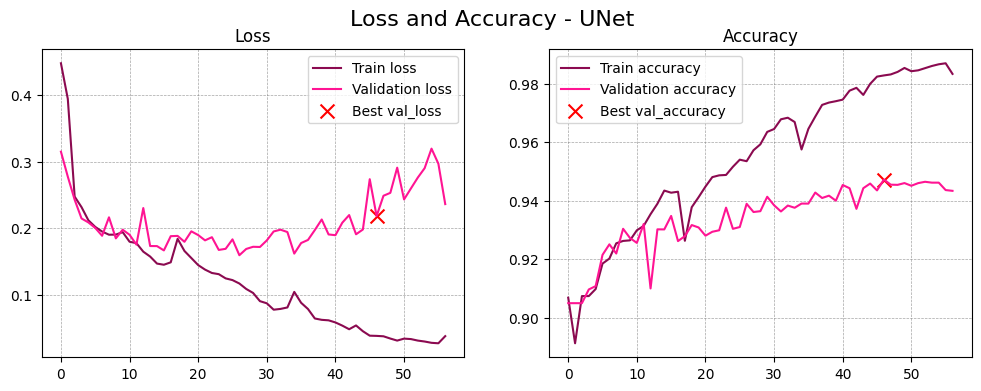
Métricas de evaluación#
y_pred = model_unet.predict(X_test, verbose=0)
y_pred_thresholded = y_pred > 0.5
IOU_keras = MeanIoU(num_classes=2)
IOU_keras.update_state(y_pred_thresholded, y_test)
iou_score = IOU_keras.result().numpy()
prec_score = Precision()
prec_score.update_state(y_pred_thresholded, y_test)
p = prec_score.result().numpy()
recall_score = Recall()
recall_score.update_state(y_pred_thresholded, y_test)
r = recall_score.result().numpy()
auc_score = AUC()
auc_score.update_state(y_pred_thresholded, y_test)
auc = auc_score.result().numpy()
intersection = np.sum(y_pred_thresholded * y_test)
union = np.sum(y_pred_thresholded) + np.sum(y_test)
dice_coefficient = (2. * intersection) / (union + 1e-7) # Evitar división por cero
balanced_accuracy = (p + r) / 2
metrics_dict = {
"Dice Coefficient": dice_coefficient,
"Mean IoU": iou_score,
"Precision": p,
"Recall": r,
"AUC": auc,
"Balanced Accuracy": balanced_accuracy}
df_metrics_unet = pd.DataFrame(metrics_dict, index=["Segmentación U-Net"])
df_metrics_unet.to_csv("resultados_unet.csv")
df_metrics_unet
| Dice Coefficient | Mean IoU | Precision | Recall | AUC | Balanced Accuracy | |
|---|---|---|---|---|---|---|
| Segmentación U-Net | 0.748199 | 0.778189 | 0.671218 | 0.845587 | 0.90961 | 0.758402 |
Comparación visual#
evaluar_modelo(model_unet, X_test, y_test, nombre_modelo="UNet")
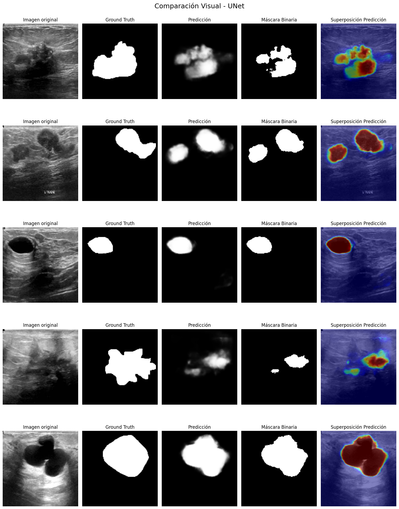
Mapas de error#
visualizar_segmentacion(model_unet, X_test, y_test, nombre_modelo="UNet")
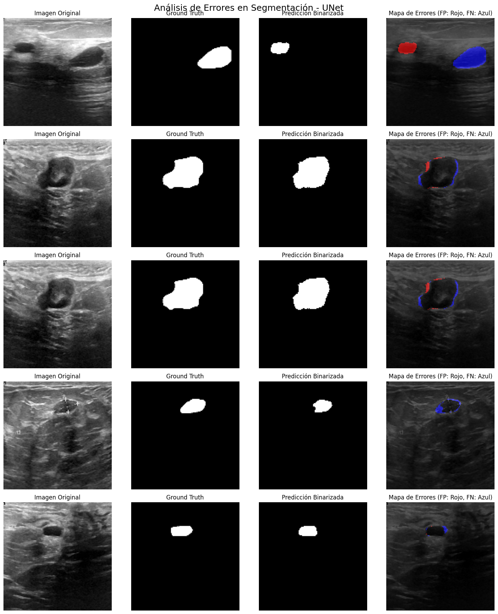
Curvas de evaluación#
plot_roc_pr_curves(y_test, y_pred)
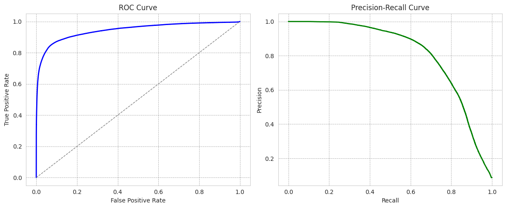
Distribución de métricas#
boxplots(y_test, y_pred)
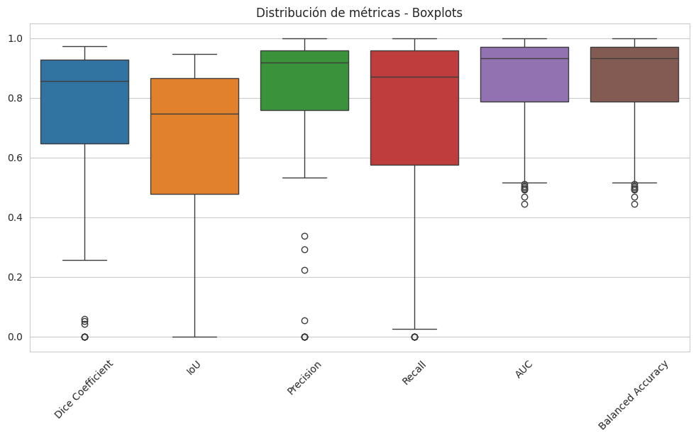
VNet#
Aunque VNet fue diseñado originalmente para segmentación de imágenes médicas en 3D (como volúmenes de resonancia magnética o tomografías), en este caso, se trabajará con imágenes 2D en escala de grises, modificando su arquitectura para utilizar convoluciones 2D en lugar de convoluciones 3D.
Arquitectura y entrenamiento#
def residual_block(input, num_filters):
conv1 = Conv2D(num_filters, (3, 3), padding="same", kernel_initializer="he_normal")(input)
conv1 = tf.keras.layers.ReLU()(conv1)
conv2 = Conv2D(num_filters, (3, 3), padding="same", kernel_initializer="he_normal")(conv1)
# Ajustar canales de input si es necesario
shortcut = Conv2D(num_filters, (1, 1), padding="same")(input) # Conv 1x1 si los canales son diferentes
# Residual connection (skip connection)
res = Add()([shortcut, conv2]) # Ahora los canales coinciden
res = tf.keras.layers.ReLU()(res)
return res
def encoder_block(input, num_filters):
res = residual_block(input, num_filters)
pool = MaxPooling2D((2, 2))(res)
return res, pool
def decoder_block(input, skip_features, num_filters):
up = Conv2DTranspose(num_filters, (2, 2), strides=2, padding="same")(input)
res = residual_block(up, num_filters)
output = Add()([res, skip_features]) # Residual skip connection
return output
def build_vnet(input_shape):
input_layer = Input(input_shape)
# Encoder
s1, p1 = encoder_block(input_layer, 64)
s2, p2 = encoder_block(p1, 128)
s3, p3 = encoder_block(p2, 256)
s4, p4 = encoder_block(p3, 512)
# Bottleneck
b1 = residual_block(p4, 1024)
# Decoder
d1 = decoder_block(b1, s4, 512)
d2 = decoder_block(d1, s3, 256)
d3 = decoder_block(d2, s2, 128)
d4 = decoder_block(d3, s1, 64)
output_layer = Conv2D(1, 1, activation="sigmoid", padding="same")(d4)
model = Model(input_layer, output_layer, name="V-Net")
return model
# Crear el modelo V-Net
model_vnet = build_vnet(input_shape=(128, 128, 1))
model_vnet.compile(loss="binary_crossentropy", optimizer="Adam", metrics=["accuracy"])
checkpointer = [
EarlyStopping(monitor='val_accuracy', verbose=1, restore_best_weights=True, mode='max', patience=10),
ModelCheckpoint(
filepath='model_vnet.weights.best.keras',
monitor='val_accuracy',
verbose=1,
save_best_only=True,
mode='max'
)
]
history_vnet = None
if os.path.exists('history_vnet.joblib'):
history_vnet = load('history_vnet.joblib')
print("El archivo 'history_vnet.joblib' ya existe. Se ha cargado el historial del entrenamiento.")
else:
history_vnet = model_vnet.fit(
X_train, y_train,
epochs=100,
validation_data=(X_val, y_val),
callbacks=checkpointer,
verbose=2,
batch_size=10
)
dump(history_vnet.history, 'history_vnet.joblib')
print("El entrenamiento se ha completado y el historial ha sido guardado en 'history_vnet.joblib'.")
Epoch 1/100
Epoch 1: val_accuracy improved from -inf to 0.90499, saving model to model_vnet.weights.best.keras
48/48 - 41s - 851ms/step - accuracy: 0.8971 - loss: 1.5388 - val_accuracy: 0.9050 - val_loss: 0.3377
Epoch 2/100
Epoch 2: val_accuracy did not improve from 0.90499
48/48 - 17s - 355ms/step - accuracy: 0.9070 - loss: 0.3096 - val_accuracy: 0.9050 - val_loss: 0.3000
Epoch 3/100
Epoch 3: val_accuracy improved from 0.90499 to 0.90514, saving model to model_vnet.weights.best.keras
48/48 - 13s - 262ms/step - accuracy: 0.9074 - loss: 0.2580 - val_accuracy: 0.9051 - val_loss: 0.2411
Epoch 4/100
Epoch 4: val_accuracy improved from 0.90514 to 0.91218, saving model to model_vnet.weights.best.keras
48/48 - 11s - 220ms/step - accuracy: 0.9081 - loss: 0.2306 - val_accuracy: 0.9122 - val_loss: 0.2214
Epoch 5/100
Epoch 5: val_accuracy improved from 0.91218 to 0.91913, saving model to model_vnet.weights.best.keras
48/48 - 20s - 412ms/step - accuracy: 0.9135 - loss: 0.2172 - val_accuracy: 0.9191 - val_loss: 0.2160
Epoch 6/100
Epoch 6: val_accuracy did not improve from 0.91913
48/48 - 8s - 158ms/step - accuracy: 0.9180 - loss: 0.2095 - val_accuracy: 0.9145 - val_loss: 0.2105
Epoch 7/100
Epoch 7: val_accuracy did not improve from 0.91913
48/48 - 8s - 160ms/step - accuracy: 0.9159 - loss: 0.2048 - val_accuracy: 0.9136 - val_loss: 0.2197
Epoch 8/100
Epoch 8: val_accuracy did not improve from 0.91913
48/48 - 8s - 159ms/step - accuracy: 0.9260 - loss: 0.1914 - val_accuracy: 0.9184 - val_loss: 0.2074
Epoch 9/100
Epoch 9: val_accuracy improved from 0.91913 to 0.92866, saving model to model_vnet.weights.best.keras
48/48 - 10s - 201ms/step - accuracy: 0.9266 - loss: 0.1828 - val_accuracy: 0.9287 - val_loss: 0.1800
Epoch 10/100
Epoch 10: val_accuracy improved from 0.92866 to 0.93253, saving model to model_vnet.weights.best.keras
48/48 - 12s - 250ms/step - accuracy: 0.9308 - loss: 0.1737 - val_accuracy: 0.9325 - val_loss: 0.1728
Epoch 11/100
Epoch 11: val_accuracy did not improve from 0.93253
48/48 - 17s - 346ms/step - accuracy: 0.9325 - loss: 0.1686 - val_accuracy: 0.9190 - val_loss: 0.2142
Epoch 12/100
Epoch 12: val_accuracy did not improve from 0.93253
48/48 - 10s - 213ms/step - accuracy: 0.9335 - loss: 0.1613 - val_accuracy: 0.9297 - val_loss: 0.1810
Epoch 13/100
Epoch 13: val_accuracy did not improve from 0.93253
48/48 - 10s - 213ms/step - accuracy: 0.9408 - loss: 0.1484 - val_accuracy: 0.9320 - val_loss: 0.1835
Epoch 14/100
Epoch 14: val_accuracy improved from 0.93253 to 0.93624, saving model to model_vnet.weights.best.keras
48/48 - 17s - 350ms/step - accuracy: 0.9420 - loss: 0.1482 - val_accuracy: 0.9362 - val_loss: 0.1787
Epoch 15/100
Epoch 15: val_accuracy did not improve from 0.93624
48/48 - 14s - 290ms/step - accuracy: 0.9427 - loss: 0.1442 - val_accuracy: 0.9343 - val_loss: 0.1606
Epoch 16/100
Epoch 16: val_accuracy improved from 0.93624 to 0.93776, saving model to model_vnet.weights.best.keras
48/48 - 13s - 264ms/step - accuracy: 0.9456 - loss: 0.1343 - val_accuracy: 0.9378 - val_loss: 0.1558
Epoch 17/100
Epoch 17: val_accuracy improved from 0.93776 to 0.93966, saving model to model_vnet.weights.best.keras
48/48 - 10s - 207ms/step - accuracy: 0.9493 - loss: 0.1241 - val_accuracy: 0.9397 - val_loss: 0.1701
Epoch 18/100
Epoch 18: val_accuracy did not improve from 0.93966
48/48 - 8s - 161ms/step - accuracy: 0.9520 - loss: 0.1183 - val_accuracy: 0.9347 - val_loss: 0.1666
Epoch 19/100
Epoch 19: val_accuracy did not improve from 0.93966
48/48 - 8s - 158ms/step - accuracy: 0.9550 - loss: 0.1086 - val_accuracy: 0.9382 - val_loss: 0.1607
Epoch 20/100
Epoch 20: val_accuracy did not improve from 0.93966
48/48 - 10s - 212ms/step - accuracy: 0.9573 - loss: 0.1050 - val_accuracy: 0.9366 - val_loss: 0.1959
Epoch 21/100
Epoch 21: val_accuracy did not improve from 0.93966
48/48 - 10s - 214ms/step - accuracy: 0.9562 - loss: 0.1078 - val_accuracy: 0.9396 - val_loss: 0.1951
Epoch 22/100
Epoch 22: val_accuracy improved from 0.93966 to 0.94571, saving model to model_vnet.weights.best.keras
48/48 - 17s - 362ms/step - accuracy: 0.9632 - loss: 0.0899 - val_accuracy: 0.9457 - val_loss: 0.1824
Epoch 23/100
Epoch 23: val_accuracy did not improve from 0.94571
48/48 - 13s - 278ms/step - accuracy: 0.9675 - loss: 0.0812 - val_accuracy: 0.9437 - val_loss: 0.2133
Epoch 24/100
Epoch 24: val_accuracy did not improve from 0.94571
48/48 - 10s - 213ms/step - accuracy: 0.9653 - loss: 0.0857 - val_accuracy: 0.9416 - val_loss: 0.1636
Epoch 25/100
Epoch 25: val_accuracy improved from 0.94571 to 0.94766, saving model to model_vnet.weights.best.keras
48/48 - 14s - 294ms/step - accuracy: 0.9696 - loss: 0.0731 - val_accuracy: 0.9477 - val_loss: 0.1808
Epoch 26/100
Epoch 26: val_accuracy did not improve from 0.94766
48/48 - 17s - 345ms/step - accuracy: 0.9727 - loss: 0.0638 - val_accuracy: 0.9476 - val_loss: 0.2316
Epoch 27/100
Epoch 27: val_accuracy improved from 0.94766 to 0.94937, saving model to model_vnet.weights.best.keras
48/48 - 10s - 200ms/step - accuracy: 0.9713 - loss: 0.0687 - val_accuracy: 0.9494 - val_loss: 0.2127
Epoch 28/100
Epoch 28: val_accuracy did not improve from 0.94937
48/48 - 8s - 159ms/step - accuracy: 0.9749 - loss: 0.0595 - val_accuracy: 0.9492 - val_loss: 0.1973
Epoch 29/100
Epoch 29: val_accuracy did not improve from 0.94937
48/48 - 8s - 160ms/step - accuracy: 0.9760 - loss: 0.0553 - val_accuracy: 0.9474 - val_loss: 0.1619
Epoch 30/100
Epoch 30: val_accuracy did not improve from 0.94937
48/48 - 8s - 157ms/step - accuracy: 0.9759 - loss: 0.0563 - val_accuracy: 0.9455 - val_loss: 0.1880
Epoch 31/100
Epoch 31: val_accuracy improved from 0.94937 to 0.94978, saving model to model_vnet.weights.best.keras
48/48 - 15s - 321ms/step - accuracy: 0.9744 - loss: 0.0605 - val_accuracy: 0.9498 - val_loss: 0.1856
Epoch 32/100
Epoch 32: val_accuracy did not improve from 0.94978
48/48 - 15s - 318ms/step - accuracy: 0.9743 - loss: 0.0603 - val_accuracy: 0.9483 - val_loss: 0.1894
Epoch 33/100
Epoch 33: val_accuracy did not improve from 0.94978
48/48 - 10s - 215ms/step - accuracy: 0.9772 - loss: 0.0536 - val_accuracy: 0.9480 - val_loss: 0.1648
Epoch 34/100
Epoch 34: val_accuracy improved from 0.94978 to 0.95116, saving model to model_vnet.weights.best.keras
48/48 - 12s - 255ms/step - accuracy: 0.9797 - loss: 0.0463 - val_accuracy: 0.9512 - val_loss: 0.2704
Epoch 35/100
Epoch 35: val_accuracy did not improve from 0.95116
48/48 - 8s - 171ms/step - accuracy: 0.9807 - loss: 0.0434 - val_accuracy: 0.9493 - val_loss: 0.2444
Epoch 36/100
Epoch 36: val_accuracy did not improve from 0.95116
48/48 - 10s - 215ms/step - accuracy: 0.9823 - loss: 0.0380 - val_accuracy: 0.9496 - val_loss: 0.3042
Epoch 37/100
Epoch 37: val_accuracy improved from 0.95116 to 0.95317, saving model to model_vnet.weights.best.keras
48/48 - 13s - 270ms/step - accuracy: 0.9841 - loss: 0.0349 - val_accuracy: 0.9532 - val_loss: 0.3150
Epoch 38/100
Epoch 38: val_accuracy did not improve from 0.95317
48/48 - 17s - 364ms/step - accuracy: 0.9847 - loss: 0.0329 - val_accuracy: 0.9513 - val_loss: 0.2475
Epoch 39/100
Epoch 39: val_accuracy did not improve from 0.95317
48/48 - 10s - 214ms/step - accuracy: 0.9858 - loss: 0.0303 - val_accuracy: 0.9531 - val_loss: 0.2915
Epoch 40/100
Epoch 40: val_accuracy improved from 0.95317 to 0.95369, saving model to model_vnet.weights.best.keras
48/48 - 12s - 256ms/step - accuracy: 0.9869 - loss: 0.0277 - val_accuracy: 0.9537 - val_loss: 0.3295
Epoch 41/100
Epoch 41: val_accuracy did not improve from 0.95369
48/48 - 8s - 160ms/step - accuracy: 0.9871 - loss: 0.0270 - val_accuracy: 0.9531 - val_loss: 0.3263
Epoch 42/100
Epoch 42: val_accuracy did not improve from 0.95369
48/48 - 10s - 213ms/step - accuracy: 0.9878 - loss: 0.0254 - val_accuracy: 0.9536 - val_loss: 0.3081
Epoch 43/100
Epoch 43: val_accuracy improved from 0.95369 to 0.95521, saving model to model_vnet.weights.best.keras
48/48 - 10s - 202ms/step - accuracy: 0.9882 - loss: 0.0241 - val_accuracy: 0.9552 - val_loss: 0.4020
Epoch 44/100
Epoch 44: val_accuracy did not improve from 0.95521
48/48 - 8s - 161ms/step - accuracy: 0.9888 - loss: 0.0226 - val_accuracy: 0.9549 - val_loss: 0.4347
Epoch 45/100
Epoch 45: val_accuracy did not improve from 0.95521
48/48 - 10s - 208ms/step - accuracy: 0.9893 - loss: 0.0213 - val_accuracy: 0.9541 - val_loss: 0.5184
Epoch 46/100
Epoch 46: val_accuracy did not improve from 0.95521
48/48 - 10s - 213ms/step - accuracy: 0.9898 - loss: 0.0204 - val_accuracy: 0.9540 - val_loss: 0.4332
Epoch 47/100
Epoch 47: val_accuracy did not improve from 0.95521
48/48 - 10s - 214ms/step - accuracy: 0.9898 - loss: 0.0200 - val_accuracy: 0.9540 - val_loss: 0.5020
Epoch 48/100
Epoch 48: val_accuracy did not improve from 0.95521
48/48 - 8s - 159ms/step - accuracy: 0.9897 - loss: 0.0202 - val_accuracy: 0.9535 - val_loss: 0.5805
Epoch 49/100
Epoch 49: val_accuracy did not improve from 0.95521
48/48 - 8s - 159ms/step - accuracy: 0.9904 - loss: 0.0186 - val_accuracy: 0.9534 - val_loss: 0.5670
Epoch 50/100
Epoch 50: val_accuracy did not improve from 0.95521
48/48 - 10s - 212ms/step - accuracy: 0.9907 - loss: 0.0182 - val_accuracy: 0.9539 - val_loss: 0.5767
Epoch 51/100
Epoch 51: val_accuracy did not improve from 0.95521
48/48 - 8s - 158ms/step - accuracy: 0.9910 - loss: 0.0176 - val_accuracy: 0.9515 - val_loss: 0.4427
Epoch 52/100
Epoch 52: val_accuracy did not improve from 0.95521
48/48 - 10s - 211ms/step - accuracy: 0.9905 - loss: 0.0184 - val_accuracy: 0.9531 - val_loss: 0.4184
Epoch 53/100
Epoch 53: val_accuracy did not improve from 0.95521
48/48 - 10s - 212ms/step - accuracy: 0.9891 - loss: 0.0261 - val_accuracy: 0.9427 - val_loss: 0.2139
Epoch 53: early stopping
Restoring model weights from the end of the best epoch: 43.
El entrenamiento se ha completado y el historial ha sido guardado en 'history_vnet.joblib'.
graficar_historial(history_vnet, nombre_modelo="VNet")
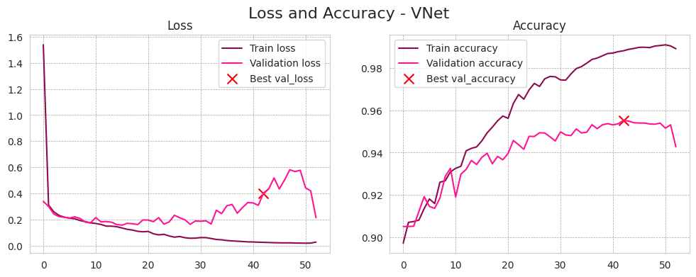
Métricas de evaluación#
y_pred = model_vnet.predict(X_test, verbose=0)
y_pred_thresholded = y_pred > 0.5
IOU_keras = MeanIoU(num_classes=2)
IOU_keras.update_state(y_pred_thresholded, y_test)
iou_score = IOU_keras.result().numpy()
prec_score = Precision()
prec_score.update_state(y_pred_thresholded, y_test)
p = prec_score.result().numpy()
recall_score = Recall()
recall_score.update_state(y_pred_thresholded, y_test)
r = recall_score.result().numpy()
auc_score = AUC()
auc_score.update_state(y_pred_thresholded, y_test)
auc = auc_score.result().numpy()
intersection = np.sum(y_pred_thresholded * y_test)
union = np.sum(y_pred_thresholded) + np.sum(y_test)
dice_coefficient = (2. * intersection) / (union + 1e-7) # Evitar división por cero
balanced_accuracy = (p + r) / 2
metrics_dict = {
"Dice Coefficient": dice_coefficient,
"Mean IoU": iou_score,
"Precision": p,
"Recall": r,
"AUC": auc,
"Balanced Accuracy": balanced_accuracy}
df_metrics_unet = pd.DataFrame(metrics_dict, index=["Segmentación VNet"])
df_metrics_unet.to_csv("resultados_vnet.csv")
df_metrics_unet
| Dice Coefficient | Mean IoU | Precision | Recall | AUC | Balanced Accuracy | |
|---|---|---|---|---|---|---|
| Segmentación VNet | 0.753009 | 0.780535 | 0.706174 | 0.806462 | 0.891673 | 0.756318 |
Comparación visual#
evaluar_modelo(model_vnet, X_test, y_test, nombre_modelo="VNet")
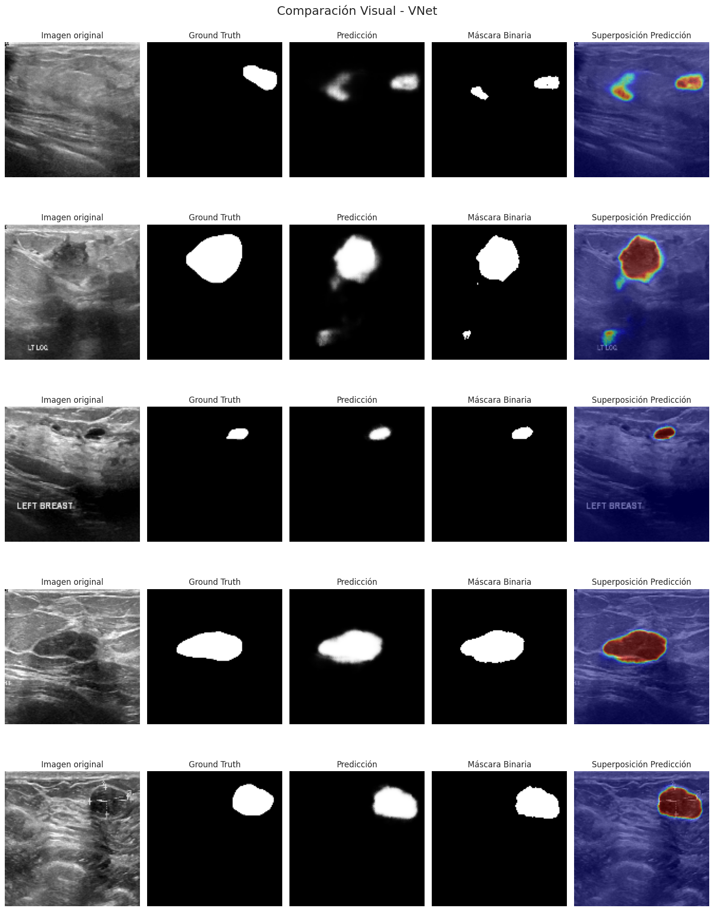
Mapas de error#
visualizar_segmentacion(model_vnet, X_test, y_test, nombre_modelo="VNet")
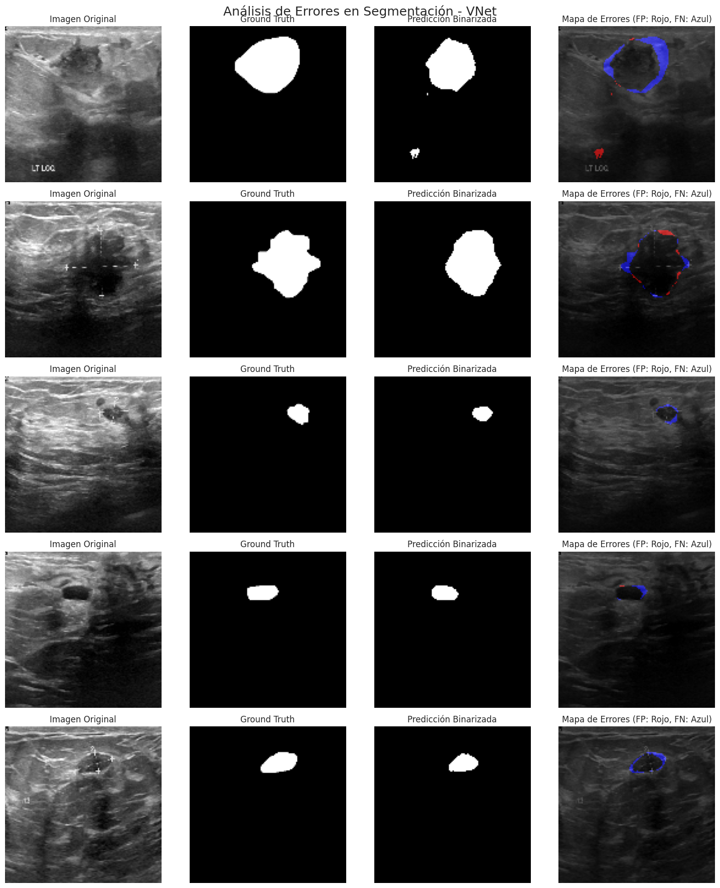
Curvas de evaluación#
plot_roc_pr_curves(y_test, y_pred)
Distribución de métricas#
boxplots(y_test, y_pred)
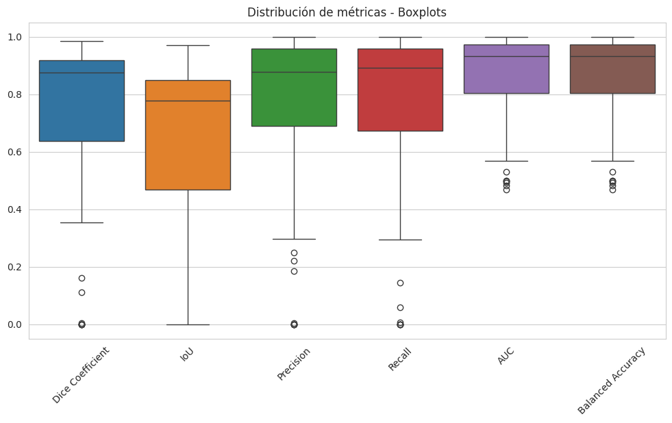
SegNet#
Arquitectura y entrenamiento#
def encoder_block(input_layer, num_filters):
"""
Bloque del codificador con BatchNorm + ReLU + Dropout
"""
# Primera convolución
x = Conv2D(num_filters, (3, 3), padding="same")(input_layer)
x = BatchNormalization()(x)
x = Activation("relu")(x)
x = Dropout(0.2)(x)
# Segunda convolución
x = Conv2D(num_filters, (3, 3), padding="same")(x)
x = BatchNormalization()(x)
x = Activation("relu")(x)
x = Dropout(0.2)(x)
p = MaxPooling2D((2, 2), strides=2, padding="same")(x)
return x, p
def decoder_block(input_layer, skip_layer, num_filters):
"""
Bloque del decodificador: Upsampling seguido de convoluciones.
"""
x = UpSampling2D((2, 2))(input_layer)
x = Conv2D(num_filters, (3, 3), padding="same", activation="relu")(x)
x = Conv2D(num_filters, (3, 3), padding="same", activation="relu")(x)
return x
input_layer = Input((128, 128, 1))
# Codificador
e1, p1 = encoder_block(input_layer, 64)
e2, p2 = encoder_block(p1, 128)
e3, p3 = encoder_block(p2, 256)
# Bottleneck
b = Conv2D(512, (3, 3), padding="same", activation="relu")(p3)
b = Conv2D(512, (3, 3), padding="same", activation="relu")(b)
# Decodificador
d3 = decoder_block(b, e3, 256)
d2 = decoder_block(d3, e2, 128)
d1 = decoder_block(d2, e1, 64)
# Capa de salida
output_layer = Conv2D(1, (1, 1), activation="sigmoid")(d1)
Seg_Net = Model(input_layer, output_layer, name="SegNet")
Seg_Net.compile(optimizer=Adam(), loss= "binary_crossentropy", metrics=["accuracy"])
checkpointer = [
EarlyStopping(monitor='val_accuracy', verbose=1, restore_best_weights=True, mode='max', patience=10),
ModelCheckpoint(filepath='model_fcn.weights.best.keras',
monitor='val_accuracy', verbose=1, save_best_only=True, mode='max')
]
X_train = X_train.astype("float32")
y_train = y_train.astype("float32")
X_val = X_val.astype("float32")
y_val = y_val.astype("float32")
history_segnet = None
if os.path.exists('history_segnet.joblib'):
history_segnet = load('history_segnet.joblib')
print("Historial de entrenamiento cargado desde 'history_segnet.joblib'.")
else:
history_segnet = Seg_Net.fit(
X_train, y_train,
epochs=100,
validation_data=(X_val, y_val),
callbacks=checkpointer,
verbose=2,
batch_size=10
)
dump(history_segnet.history, 'history_segnet.joblib')
print("Entrenamiento completado y guardado en 'history_segnet.joblib'.")
Epoch 1/100
Epoch 1: val_accuracy improved from -inf to 0.90499, saving model to model_fcn.weights.best.keras
48/48 - 33s - 688ms/step - accuracy: 0.8935 - loss: 0.5199 - val_accuracy: 0.9050 - val_loss: 0.3704
Epoch 2/100
Epoch 2: val_accuracy did not improve from 0.90499
48/48 - 20s - 425ms/step - accuracy: 0.9070 - loss: 0.2444 - val_accuracy: 0.9050 - val_loss: 0.2926
Epoch 3/100
Epoch 3: val_accuracy did not improve from 0.90499
48/48 - 10s - 216ms/step - accuracy: 0.9093 - loss: 0.2326 - val_accuracy: 0.9050 - val_loss: 0.2974
Epoch 4/100
Epoch 4: val_accuracy did not improve from 0.90499
48/48 - 6s - 120ms/step - accuracy: 0.9122 - loss: 0.2155 - val_accuracy: 0.9050 - val_loss: 0.2659
Epoch 5/100
Epoch 5: val_accuracy did not improve from 0.90499
48/48 - 6s - 119ms/step - accuracy: 0.9136 - loss: 0.2183 - val_accuracy: 0.9050 - val_loss: 0.2728
Epoch 6/100
Epoch 6: val_accuracy did not improve from 0.90499
48/48 - 10s - 209ms/step - accuracy: 0.9198 - loss: 0.2153 - val_accuracy: 0.9050 - val_loss: 0.3157
Epoch 7/100
Epoch 7: val_accuracy did not improve from 0.90499
48/48 - 10s - 219ms/step - accuracy: 0.9250 - loss: 0.2015 - val_accuracy: 0.9050 - val_loss: 0.2732
Epoch 8/100
Epoch 8: val_accuracy did not improve from 0.90499
48/48 - 6s - 115ms/step - accuracy: 0.9274 - loss: 0.1923 - val_accuracy: 0.9050 - val_loss: 0.2527
Epoch 9/100
Epoch 9: val_accuracy did not improve from 0.90499
48/48 - 10s - 218ms/step - accuracy: 0.9313 - loss: 0.1960 - val_accuracy: 0.9047 - val_loss: 0.2615
Epoch 10/100
Epoch 10: val_accuracy improved from 0.90499 to 0.90836, saving model to model_fcn.weights.best.keras
48/48 - 11s - 225ms/step - accuracy: 0.9320 - loss: 0.1791 - val_accuracy: 0.9084 - val_loss: 0.2506
Epoch 11/100
Epoch 11: val_accuracy improved from 0.90836 to 0.91007, saving model to model_fcn.weights.best.keras
48/48 - 6s - 124ms/step - accuracy: 0.9351 - loss: 0.1787 - val_accuracy: 0.9101 - val_loss: 0.2434
Epoch 12/100
Epoch 12: val_accuracy improved from 0.91007 to 0.91793, saving model to model_fcn.weights.best.keras
48/48 - 10s - 214ms/step - accuracy: 0.9380 - loss: 0.1671 - val_accuracy: 0.9179 - val_loss: 0.2219
Epoch 13/100
Epoch 13: val_accuracy did not improve from 0.91793
48/48 - 6s - 118ms/step - accuracy: 0.9405 - loss: 0.1600 - val_accuracy: 0.9156 - val_loss: 0.2180
Epoch 14/100
Epoch 14: val_accuracy did not improve from 0.91793
48/48 - 6s - 120ms/step - accuracy: 0.9412 - loss: 0.1600 - val_accuracy: 0.9173 - val_loss: 0.2220
Epoch 15/100
Epoch 15: val_accuracy improved from 0.91793 to 0.92683, saving model to model_fcn.weights.best.keras
48/48 - 11s - 219ms/step - accuracy: 0.9413 - loss: 0.1559 - val_accuracy: 0.9268 - val_loss: 0.1909
Epoch 16/100
Epoch 16: val_accuracy did not improve from 0.92683
48/48 - 10s - 206ms/step - accuracy: 0.9464 - loss: 0.1443 - val_accuracy: 0.9258 - val_loss: 0.1935
Epoch 17/100
Epoch 17: val_accuracy improved from 0.92683 to 0.92906, saving model to model_fcn.weights.best.keras
48/48 - 6s - 123ms/step - accuracy: 0.9443 - loss: 0.1466 - val_accuracy: 0.9291 - val_loss: 0.1850
Epoch 18/100
Epoch 18: val_accuracy improved from 0.92906 to 0.93687, saving model to model_fcn.weights.best.keras
48/48 - 10s - 216ms/step - accuracy: 0.9458 - loss: 0.1464 - val_accuracy: 0.9369 - val_loss: 0.1896
Epoch 19/100
Epoch 19: val_accuracy did not improve from 0.93687
48/48 - 6s - 119ms/step - accuracy: 0.9456 - loss: 0.1531 - val_accuracy: 0.8767 - val_loss: 0.2602
Epoch 20/100
Epoch 20: val_accuracy did not improve from 0.93687
48/48 - 6s - 115ms/step - accuracy: 0.9480 - loss: 0.1390 - val_accuracy: 0.9290 - val_loss: 0.1906
Epoch 21/100
Epoch 21: val_accuracy did not improve from 0.93687
48/48 - 10s - 212ms/step - accuracy: 0.9497 - loss: 0.1321 - val_accuracy: 0.9252 - val_loss: 0.1907
Epoch 22/100
Epoch 22: val_accuracy did not improve from 0.93687
48/48 - 5s - 113ms/step - accuracy: 0.9520 - loss: 0.1267 - val_accuracy: 0.9301 - val_loss: 0.1881
Epoch 23/100
Epoch 23: val_accuracy did not improve from 0.93687
48/48 - 11s - 219ms/step - accuracy: 0.9520 - loss: 0.1257 - val_accuracy: 0.9319 - val_loss: 0.1717
Epoch 24/100
Epoch 24: val_accuracy did not improve from 0.93687
48/48 - 10s - 209ms/step - accuracy: 0.9553 - loss: 0.1161 - val_accuracy: 0.9335 - val_loss: 0.1745
Epoch 25/100
Epoch 25: val_accuracy did not improve from 0.93687
48/48 - 10s - 218ms/step - accuracy: 0.9537 - loss: 0.1192 - val_accuracy: 0.9248 - val_loss: 0.2073
Epoch 26/100
Epoch 26: val_accuracy did not improve from 0.93687
48/48 - 10s - 214ms/step - accuracy: 0.9538 - loss: 0.1201 - val_accuracy: 0.9231 - val_loss: 0.2022
Epoch 27/100
Epoch 27: val_accuracy improved from 0.93687 to 0.94103, saving model to model_fcn.weights.best.keras
48/48 - 11s - 228ms/step - accuracy: 0.9542 - loss: 0.1172 - val_accuracy: 0.9410 - val_loss: 0.1609
Epoch 28/100
Epoch 28: val_accuracy did not improve from 0.94103
48/48 - 9s - 192ms/step - accuracy: 0.9544 - loss: 0.1195 - val_accuracy: 0.9391 - val_loss: 0.1658
Epoch 29/100
Epoch 29: val_accuracy did not improve from 0.94103
48/48 - 10s - 218ms/step - accuracy: 0.9577 - loss: 0.1094 - val_accuracy: 0.9349 - val_loss: 0.1679
Epoch 30/100
Epoch 30: val_accuracy did not improve from 0.94103
48/48 - 10s - 207ms/step - accuracy: 0.9600 - loss: 0.1020 - val_accuracy: 0.9350 - val_loss: 0.1726
Epoch 31/100
Epoch 31: val_accuracy did not improve from 0.94103
48/48 - 6s - 119ms/step - accuracy: 0.9588 - loss: 0.1017 - val_accuracy: 0.9348 - val_loss: 0.1799
Epoch 32/100
Epoch 32: val_accuracy did not improve from 0.94103
48/48 - 10s - 208ms/step - accuracy: 0.9621 - loss: 0.0937 - val_accuracy: 0.9316 - val_loss: 0.1888
Epoch 33/100
Epoch 33: val_accuracy did not improve from 0.94103
48/48 - 5s - 114ms/step - accuracy: 0.9629 - loss: 0.0920 - val_accuracy: 0.9345 - val_loss: 0.1823
Epoch 34/100
Epoch 34: val_accuracy did not improve from 0.94103
48/48 - 5s - 113ms/step - accuracy: 0.9636 - loss: 0.0914 - val_accuracy: 0.9407 - val_loss: 0.1699
Epoch 35/100
Epoch 35: val_accuracy did not improve from 0.94103
48/48 - 10s - 218ms/step - accuracy: 0.9617 - loss: 0.0963 - val_accuracy: 0.9372 - val_loss: 0.1634
Epoch 36/100
Epoch 36: val_accuracy did not improve from 0.94103
48/48 - 10s - 213ms/step - accuracy: 0.9656 - loss: 0.0874 - val_accuracy: 0.9394 - val_loss: 0.1639
Epoch 37/100
Epoch 37: val_accuracy did not improve from 0.94103
48/48 - 10s - 209ms/step - accuracy: 0.9668 - loss: 0.0821 - val_accuracy: 0.9327 - val_loss: 0.1721
Epoch 37: early stopping
Restoring model weights from the end of the best epoch: 27.
Entrenamiento completado y guardado en 'history_segnet.joblib'.
graficar_historial(history_segnet, nombre_modelo="SegNet")
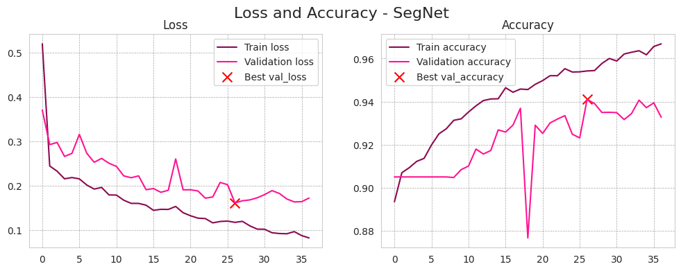
Métricas de evaluación#
y_pred = Seg_Net.predict(X_test, verbose=0)
y_pred_thresholded = y_pred > 0.5
IOU_keras = MeanIoU(num_classes=2)
IOU_keras.update_state(y_pred_thresholded, y_test)
iou_score = IOU_keras.result().numpy()
prec_score = Precision()
prec_score.update_state(y_pred_thresholded, y_test)
p = prec_score.result().numpy()
recall_score = Recall()
recall_score.update_state(y_pred_thresholded, y_test)
r = recall_score.result().numpy()
auc_score = AUC()
auc_score.update_state(y_pred_thresholded, y_test)
auc = auc_score.result().numpy()
intersection = np.sum(y_pred_thresholded * y_test)
union = np.sum(y_pred_thresholded) + np.sum(y_test)
dice_coefficient = (2. * intersection) / (union + 1e-7) # Evitar división por cero
balanced_accuracy = (p + r) / 2
metrics_dict = {
"Dice Coefficient": dice_coefficient,
"Mean IoU": iou_score,
"Precision": p,
"Recall": r,
"AUC": auc,
"Balanced Accuracy": balanced_accuracy}
df_metrics_segnet = pd.DataFrame(metrics_dict, index=["Segmentación Seg-Net"])
df_metrics_segnet.to_csv("resultados_segnet.csv")
df_metrics_segnet
| Dice Coefficient | Mean IoU | Precision | Recall | AUC | Balanced Accuracy | |
|---|---|---|---|---|---|---|
| Segmentación Seg-Net | 0.658875 | 0.720244 | 0.561378 | 0.797481 | 0.879595 | 0.679429 |
Comparación visual#
evaluar_modelo(Seg_Net, X_test, y_test, nombre_modelo="SegNet")
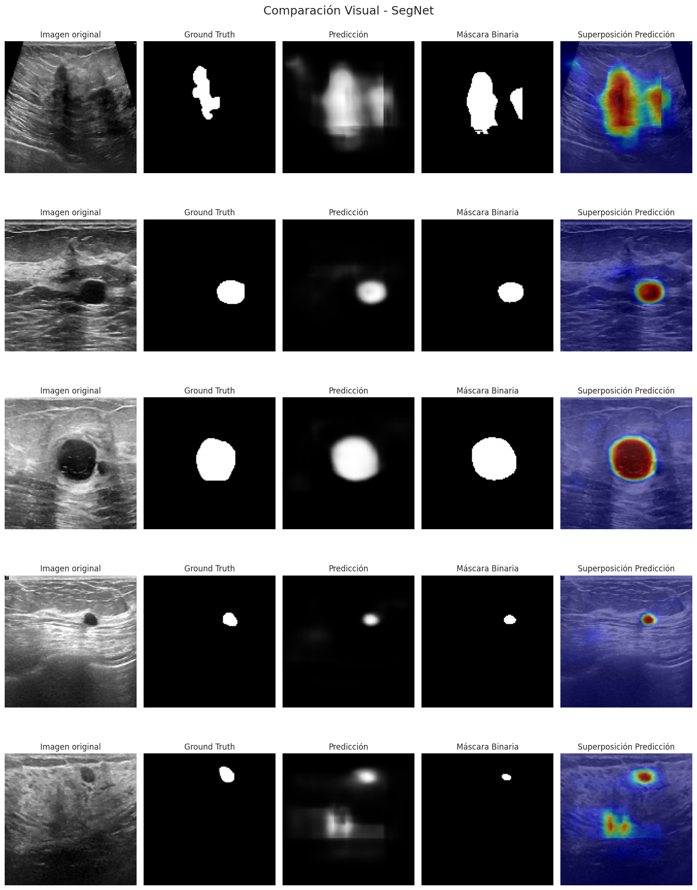
Mapas de error#
visualizar_segmentacion(Seg_Net, X_test, y_test, nombre_modelo="SegNet")
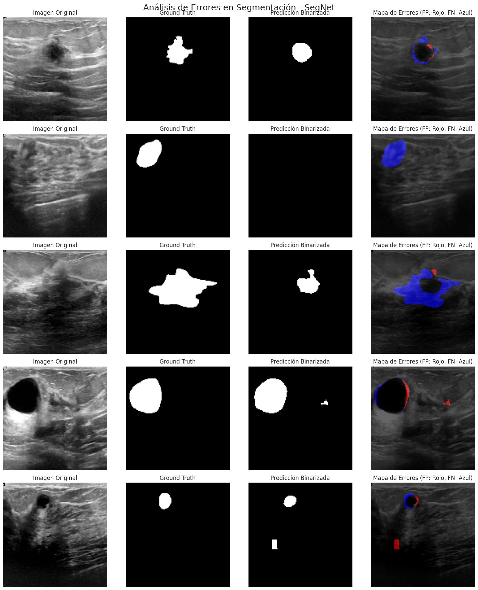
Curvas de evaluación#
plot_roc_pr_curves(y_test, y_pred)
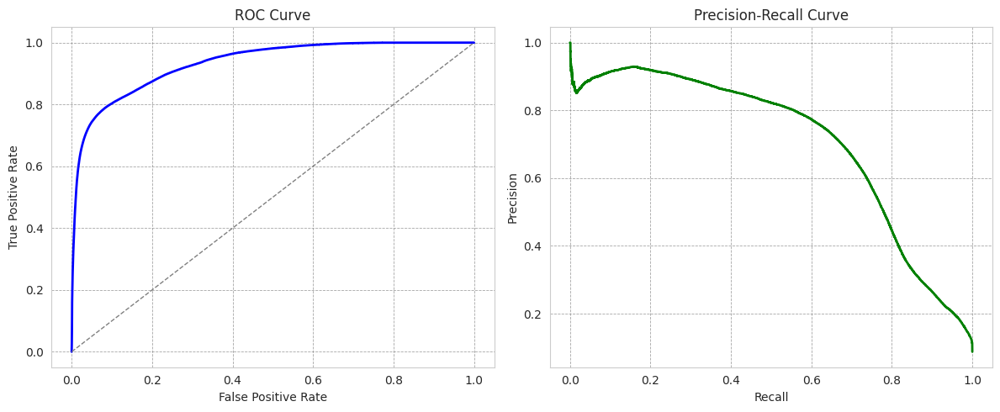
Distribución de métricas#
boxplots(y_test, y_pred)
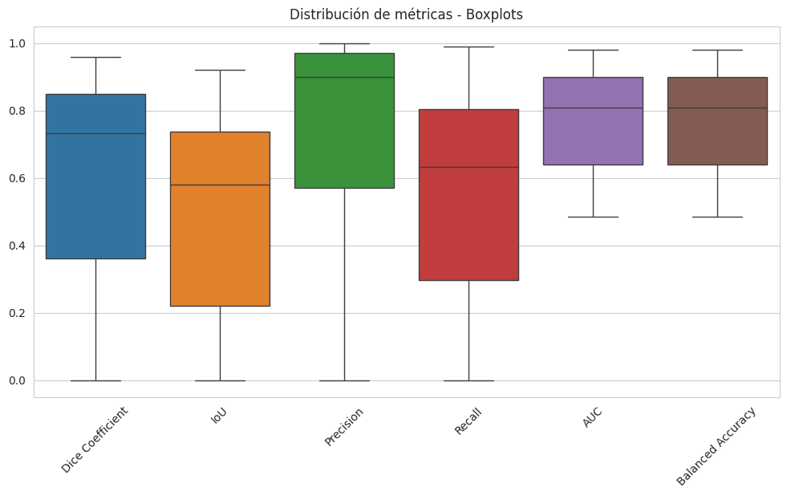
Attention UNet#
Arquitectura y entrenamiento#
def conv_block(input, num_filters):
conv = Conv2D(num_filters, (3, 3), activation="relu", padding="same", kernel_initializer='he_normal')(input)
conv = Conv2D(num_filters, (3, 3), activation="relu", padding="same", kernel_initializer='he_normal')(conv)
return conv
def attention_gate(input, skip_features, num_filters):
g = Conv2D(num_filters, (1, 1), padding='same')(input)
s = Conv2D(num_filters, (1, 1), padding='same')(skip_features)
attn = Add()([g, s])
attn = Activation('relu')(attn)
attn = Conv2D(1, (1, 1), padding='same', activation='sigmoid')(attn)
attn = Multiply()([skip_features, attn])
return attn
def encoder_block(input, num_filters):
conv = conv_block(input, num_filters)
pool = MaxPooling2D((2, 2))(conv)
return conv, pool
def decoder_block(input, skip_features, num_filters):
uconv = Conv2DTranspose(num_filters, (2, 2), strides=2, padding="same")(input)
attn = attention_gate(uconv, skip_features, num_filters)
con = concatenate([uconv, attn])
conv = conv_block(con, num_filters)
return conv
def build_attention_unet(input_shape):
input_layer = Input(input_shape)
s1, p1 = encoder_block(input_layer, 64)
s2, p2 = encoder_block(p1, 128)
s3, p3 = encoder_block(p2, 256)
s4, p4 = encoder_block(p3, 512)
b1 = conv_block(p4, 1024)
d1 = decoder_block(b1, s4, 512)
d2 = decoder_block(d1, s3, 256)
d3 = decoder_block(d2, s2, 128)
d4 = decoder_block(d3, s1, 64)
output_layer = Conv2D(1, 1, padding="same", activation="sigmoid")(d4)
model = Model(input_layer, output_layer, name="Attention-U-Net")
return model
model_att_unet = build_attention_unet(input_shape=(128, 128, 1))
model_att_unet.compile(loss="binary_crossentropy", optimizer="Adam", metrics=["accuracy"])
checkpointer = [
EarlyStopping(monitor='val_accuracy', verbose=1, restore_best_weights=True, mode='max', patience=10),
ModelCheckpoint(
filepath='model_att.weights.best.keras',
monitor='val_accuracy',
verbose=1,
save_best_only=True,
mode='max'
)
]
history_att_unet = None
if os.path.exists('history_att_unet.joblib'):
history_att_unet = load('history_att_unet.joblib')
print("El archivo 'history_att_unet.joblib' ya existe. Se ha cargado el historial del entrenamiento.")
else:
history_att_unet = model_att_unet.fit(
X_train, y_train,
epochs=100,
validation_data=(X_val, y_val),
callbacks=checkpointer,
verbose=2,
batch_size=10
)
dump(history_att_unet.history, 'history_att_unet.joblib')
print("El entrenamiento se ha completado y el historial ha sido guardado en 'history_att_unet.joblib'.")
Epoch 1/100
Epoch 1: val_accuracy improved from -inf to 0.90499, saving model to model_att.weights.best.keras
48/48 - 41s - 845ms/step - accuracy: 0.8850 - loss: 0.3904 - val_accuracy: 0.9050 - val_loss: 0.3109
Epoch 2/100
Epoch 2: val_accuracy improved from 0.90499 to 0.90918, saving model to model_att.weights.best.keras
48/48 - 11s - 237ms/step - accuracy: 0.9072 - loss: 0.3054 - val_accuracy: 0.9092 - val_loss: 0.2324
Epoch 3/100
Epoch 3: val_accuracy did not improve from 0.90918
48/48 - 18s - 381ms/step - accuracy: 0.9070 - loss: 0.2542 - val_accuracy: 0.9056 - val_loss: 0.2209
Epoch 4/100
Epoch 4: val_accuracy improved from 0.90918 to 0.91101, saving model to model_att.weights.best.keras
48/48 - 11s - 239ms/step - accuracy: 0.9069 - loss: 0.2363 - val_accuracy: 0.9110 - val_loss: 0.2188
Epoch 5/100
Epoch 5: val_accuracy improved from 0.91101 to 0.91243, saving model to model_att.weights.best.keras
48/48 - 20s - 424ms/step - accuracy: 0.9105 - loss: 0.2187 - val_accuracy: 0.9124 - val_loss: 0.2228
Epoch 6/100
Epoch 6: val_accuracy did not improve from 0.91243
48/48 - 18s - 378ms/step - accuracy: 0.9168 - loss: 0.2113 - val_accuracy: 0.9068 - val_loss: 0.2162
Epoch 7/100
Epoch 7: val_accuracy improved from 0.91243 to 0.92669, saving model to model_att.weights.best.keras
48/48 - 12s - 260ms/step - accuracy: 0.9183 - loss: 0.2122 - val_accuracy: 0.9267 - val_loss: 0.1893
Epoch 8/100
Epoch 8: val_accuracy did not improve from 0.92669
48/48 - 10s - 206ms/step - accuracy: 0.9233 - loss: 0.1976 - val_accuracy: 0.9078 - val_loss: 0.2112
Epoch 9/100
Epoch 9: val_accuracy did not improve from 0.92669
48/48 - 9s - 197ms/step - accuracy: 0.9166 - loss: 0.2182 - val_accuracy: 0.9216 - val_loss: 0.1977
Epoch 10/100
Epoch 10: val_accuracy improved from 0.92669 to 0.92718, saving model to model_att.weights.best.keras
48/48 - 11s - 235ms/step - accuracy: 0.9264 - loss: 0.1899 - val_accuracy: 0.9272 - val_loss: 0.1854
Epoch 11/100
Epoch 11: val_accuracy improved from 0.92718 to 0.92791, saving model to model_att.weights.best.keras
48/48 - 21s - 430ms/step - accuracy: 0.9287 - loss: 0.1798 - val_accuracy: 0.9279 - val_loss: 0.1977
Epoch 12/100
Epoch 12: val_accuracy improved from 0.92791 to 0.92920, saving model to model_att.weights.best.keras
48/48 - 21s - 427ms/step - accuracy: 0.9275 - loss: 0.1996 - val_accuracy: 0.9292 - val_loss: 0.1892
Epoch 13/100
Epoch 13: val_accuracy did not improve from 0.92920
48/48 - 9s - 191ms/step - accuracy: 0.9302 - loss: 0.1808 - val_accuracy: 0.9140 - val_loss: 0.2087
Epoch 14/100
Epoch 14: val_accuracy did not improve from 0.92920
48/48 - 9s - 192ms/step - accuracy: 0.9316 - loss: 0.1799 - val_accuracy: 0.9261 - val_loss: 0.2001
Epoch 15/100
Epoch 15: val_accuracy improved from 0.92920 to 0.93492, saving model to model_att.weights.best.keras
48/48 - 12s - 244ms/step - accuracy: 0.9258 - loss: 0.1902 - val_accuracy: 0.9349 - val_loss: 0.1740
Epoch 16/100
Epoch 16: val_accuracy improved from 0.93492 to 0.93532, saving model to model_att.weights.best.keras
48/48 - 11s - 235ms/step - accuracy: 0.9335 - loss: 0.1729 - val_accuracy: 0.9353 - val_loss: 0.1708
Epoch 17/100
Epoch 17: val_accuracy did not improve from 0.93532
48/48 - 18s - 381ms/step - accuracy: 0.9358 - loss: 0.1667 - val_accuracy: 0.9335 - val_loss: 0.1822
Epoch 18/100
Epoch 18: val_accuracy did not improve from 0.93532
48/48 - 9s - 188ms/step - accuracy: 0.9423 - loss: 0.1480 - val_accuracy: 0.9255 - val_loss: 0.1721
Epoch 19/100
Epoch 19: val_accuracy did not improve from 0.93532
48/48 - 10s - 216ms/step - accuracy: 0.9409 - loss: 0.1517 - val_accuracy: 0.9312 - val_loss: 0.1772
Epoch 20/100
Epoch 20: val_accuracy improved from 0.93532 to 0.93831, saving model to model_att.weights.best.keras
48/48 - 13s - 275ms/step - accuracy: 0.9443 - loss: 0.1396 - val_accuracy: 0.9383 - val_loss: 0.1705
Epoch 21/100
Epoch 21: val_accuracy did not improve from 0.93831
48/48 - 17s - 364ms/step - accuracy: 0.9462 - loss: 0.1345 - val_accuracy: 0.9286 - val_loss: 0.1903
Epoch 22/100
Epoch 22: val_accuracy did not improve from 0.93831
48/48 - 10s - 203ms/step - accuracy: 0.9460 - loss: 0.1352 - val_accuracy: 0.9375 - val_loss: 0.1591
Epoch 23/100
Epoch 23: val_accuracy improved from 0.93831 to 0.93847, saving model to model_att.weights.best.keras
48/48 - 12s - 247ms/step - accuracy: 0.9532 - loss: 0.1141 - val_accuracy: 0.9385 - val_loss: 0.1648
Epoch 24/100
Epoch 24: val_accuracy did not improve from 0.93847
48/48 - 18s - 368ms/step - accuracy: 0.9555 - loss: 0.1071 - val_accuracy: 0.9354 - val_loss: 0.1799
Epoch 25/100
Epoch 25: val_accuracy improved from 0.93847 to 0.93995, saving model to model_att.weights.best.keras
48/48 - 13s - 262ms/step - accuracy: 0.9568 - loss: 0.1041 - val_accuracy: 0.9400 - val_loss: 0.1766
Epoch 26/100
Epoch 26: val_accuracy did not improve from 0.93995
48/48 - 18s - 380ms/step - accuracy: 0.9614 - loss: 0.0951 - val_accuracy: 0.9381 - val_loss: 0.1799
Epoch 27/100
Epoch 27: val_accuracy improved from 0.93995 to 0.94184, saving model to model_att.weights.best.keras
48/48 - 12s - 243ms/step - accuracy: 0.9635 - loss: 0.0870 - val_accuracy: 0.9418 - val_loss: 0.1643
Epoch 28/100
Epoch 28: val_accuracy did not improve from 0.94184
48/48 - 18s - 376ms/step - accuracy: 0.9655 - loss: 0.0821 - val_accuracy: 0.9413 - val_loss: 0.1688
Epoch 29/100
Epoch 29: val_accuracy improved from 0.94184 to 0.94477, saving model to model_att.weights.best.keras
48/48 - 15s - 307ms/step - accuracy: 0.9691 - loss: 0.0738 - val_accuracy: 0.9448 - val_loss: 0.1631
Epoch 30/100
Epoch 30: val_accuracy improved from 0.94477 to 0.94564, saving model to model_att.weights.best.keras
48/48 - 18s - 377ms/step - accuracy: 0.9716 - loss: 0.0686 - val_accuracy: 0.9456 - val_loss: 0.1608
Epoch 31/100
Epoch 31: val_accuracy did not improve from 0.94564
48/48 - 18s - 380ms/step - accuracy: 0.9732 - loss: 0.0643 - val_accuracy: 0.9386 - val_loss: 0.2014
Epoch 32/100
Epoch 32: val_accuracy did not improve from 0.94564
48/48 - 10s - 214ms/step - accuracy: 0.9738 - loss: 0.0603 - val_accuracy: 0.9452 - val_loss: 0.1895
Epoch 33/100
Epoch 33: val_accuracy did not improve from 0.94564
48/48 - 10s - 205ms/step - accuracy: 0.9770 - loss: 0.0537 - val_accuracy: 0.9431 - val_loss: 0.1934
Epoch 34/100
Epoch 34: val_accuracy did not improve from 0.94564
48/48 - 10s - 199ms/step - accuracy: 0.9764 - loss: 0.0538 - val_accuracy: 0.9440 - val_loss: 0.1768
Epoch 35/100
Epoch 35: val_accuracy did not improve from 0.94564
48/48 - 10s - 211ms/step - accuracy: 0.9780 - loss: 0.0502 - val_accuracy: 0.9436 - val_loss: 0.2279
Epoch 36/100
Epoch 36: val_accuracy did not improve from 0.94564
48/48 - 9s - 187ms/step - accuracy: 0.9802 - loss: 0.0448 - val_accuracy: 0.9456 - val_loss: 0.2050
Epoch 37/100
Epoch 37: val_accuracy did not improve from 0.94564
48/48 - 9s - 187ms/step - accuracy: 0.9807 - loss: 0.0436 - val_accuracy: 0.9452 - val_loss: 0.2127
Epoch 38/100
Epoch 38: val_accuracy improved from 0.94564 to 0.94581, saving model to model_att.weights.best.keras
48/48 - 14s - 301ms/step - accuracy: 0.9816 - loss: 0.0409 - val_accuracy: 0.9458 - val_loss: 0.2291
Epoch 39/100
Epoch 39: val_accuracy did not improve from 0.94581
48/48 - 16s - 339ms/step - accuracy: 0.9818 - loss: 0.0409 - val_accuracy: 0.9448 - val_loss: 0.2467
Epoch 40/100
Epoch 40: val_accuracy did not improve from 0.94581
48/48 - 10s - 215ms/step - accuracy: 0.9819 - loss: 0.0418 - val_accuracy: 0.9434 - val_loss: 0.2490
Epoch 41/100
Epoch 41: val_accuracy did not improve from 0.94581
48/48 - 11s - 227ms/step - accuracy: 0.9816 - loss: 0.0416 - val_accuracy: 0.9446 - val_loss: 0.2087
Epoch 42/100
Epoch 42: val_accuracy improved from 0.94581 to 0.94758, saving model to model_att.weights.best.keras
48/48 - 20s - 414ms/step - accuracy: 0.9832 - loss: 0.0396 - val_accuracy: 0.9476 - val_loss: 0.2426
Epoch 43/100
Epoch 43: val_accuracy did not improve from 0.94758
48/48 - 9s - 189ms/step - accuracy: 0.9845 - loss: 0.0341 - val_accuracy: 0.9452 - val_loss: 0.2537
Epoch 44/100
Epoch 44: val_accuracy did not improve from 0.94758
48/48 - 10s - 212ms/step - accuracy: 0.9845 - loss: 0.0340 - val_accuracy: 0.9448 - val_loss: 0.2611
Epoch 45/100
Epoch 45: val_accuracy did not improve from 0.94758
48/48 - 10s - 215ms/step - accuracy: 0.9809 - loss: 0.0440 - val_accuracy: 0.9408 - val_loss: 0.2528
Epoch 46/100
Epoch 46: val_accuracy did not improve from 0.94758
48/48 - 10s - 212ms/step - accuracy: 0.9845 - loss: 0.0343 - val_accuracy: 0.9454 - val_loss: 0.2286
Epoch 47/100
Epoch 47: val_accuracy did not improve from 0.94758
48/48 - 10s - 211ms/step - accuracy: 0.9859 - loss: 0.0301 - val_accuracy: 0.9463 - val_loss: 0.2901
Epoch 48/100
Epoch 48: val_accuracy did not improve from 0.94758
48/48 - 10s - 213ms/step - accuracy: 0.9870 - loss: 0.0273 - val_accuracy: 0.9440 - val_loss: 0.3032
Epoch 49/100
Epoch 49: val_accuracy did not improve from 0.94758
48/48 - 10s - 213ms/step - accuracy: 0.9877 - loss: 0.0257 - val_accuracy: 0.9457 - val_loss: 0.2973
Epoch 50/100
Epoch 50: val_accuracy did not improve from 0.94758
48/48 - 10s - 213ms/step - accuracy: 0.9883 - loss: 0.0241 - val_accuracy: 0.9469 - val_loss: 0.3158
Epoch 51/100
Epoch 51: val_accuracy did not improve from 0.94758
48/48 - 9s - 188ms/step - accuracy: 0.9889 - loss: 0.0228 - val_accuracy: 0.9450 - val_loss: 0.2955
Epoch 52/100
Epoch 52: val_accuracy did not improve from 0.94758
48/48 - 10s - 213ms/step - accuracy: 0.9891 - loss: 0.0219 - val_accuracy: 0.9467 - val_loss: 0.3214
Epoch 52: early stopping
Restoring model weights from the end of the best epoch: 42.
El entrenamiento se ha completado y el historial ha sido guardado en 'history_att_unet.joblib'.
graficar_historial(history_att_unet, nombre_modelo="Attention UNet")
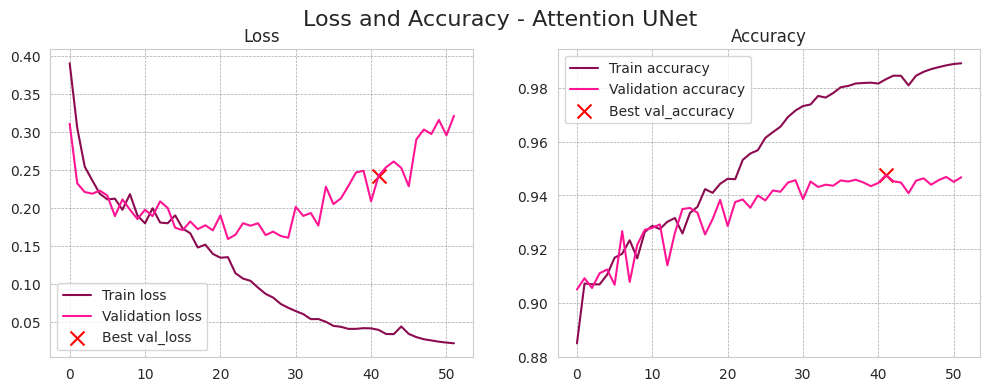
Métricas de evaluación#
y_pred=model_att_unet.predict(X_test,verbose=0)
y_pred_thresholded = y_pred > 0.5
IOU_keras = MeanIoU(num_classes=2)
IOU_keras.update_state(y_pred_thresholded, y_test)
iou_score = IOU_keras.result().numpy()
prec_score = Precision()
prec_score.update_state(y_pred_thresholded, y_test)
p = prec_score.result().numpy()
recall_score = Recall()
recall_score.update_state(y_pred_thresholded, y_test)
r = recall_score.result().numpy()
auc_score = AUC()
auc_score.update_state(y_pred_thresholded, y_test)
auc = auc_score.result().numpy()
intersection = np.sum(y_pred_thresholded * y_test)
union = np.sum(y_pred_thresholded) + np.sum(y_test)
dice_coefficient = (2. * intersection) / (union + 1e-7) # Evitar división por cero
balanced_accuracy = (p + r) / 2
metrics_dict = {
"Dice Coefficient": dice_coefficient,
"Mean IoU": iou_score,
"Precision": p,
"Recall": r,
"AUC": auc,
"Balanced Accuracy": balanced_accuracy}
df_metrics_attunet = pd.DataFrame(metrics_dict, index=["Segmentación Attention UNet"])
df_metrics_attunet.to_csv("resultados_attunet.csv")
df_metrics_attunet
| Dice Coefficient | Mean IoU | Precision | Recall | AUC | Balanced Accuracy | |
|---|---|---|---|---|---|---|
| Segmentación Attention UNet | 0.724397 | 0.75959 | 0.683622 | 0.770648 | 0.872404 | 0.727135 |
Comparación visual#
evaluar_modelo(model_att_unet, X_test, y_test, nombre_modelo="Attention UNet")
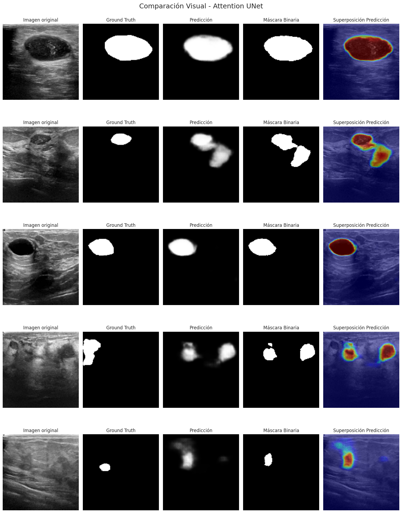
Mapas de error#
visualizar_segmentacion(model_att_unet, X_test, y_test, nombre_modelo="Attention UNet")
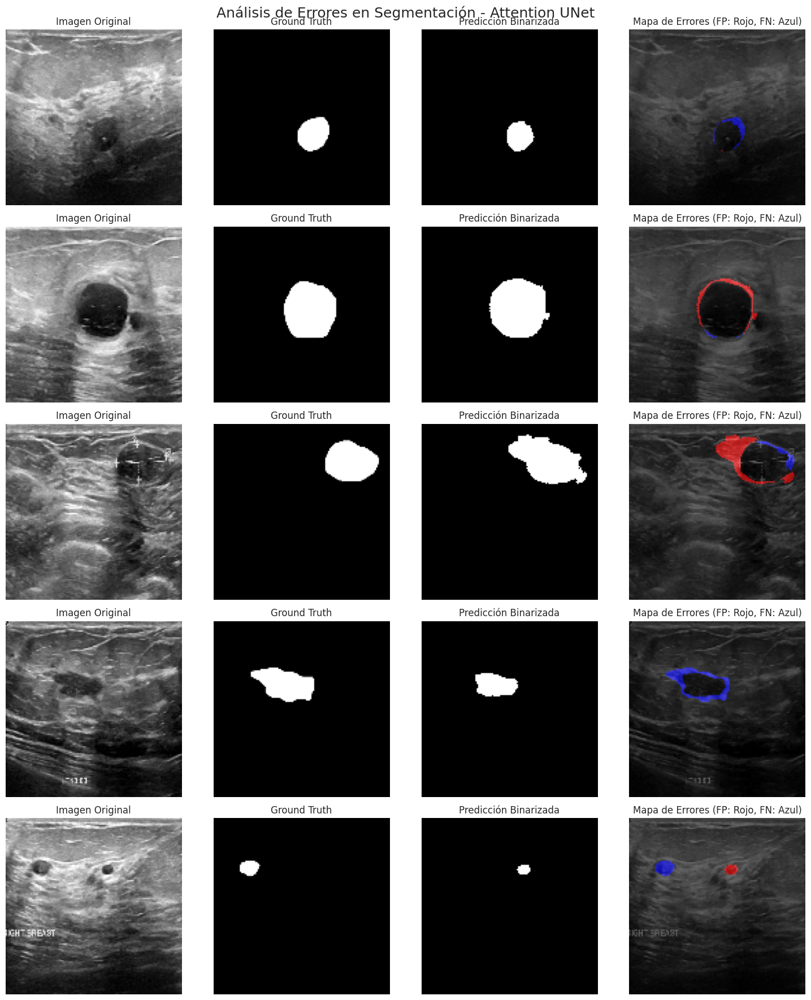
Curvas de evaluación#
plot_roc_pr_curves(y_test, y_pred)
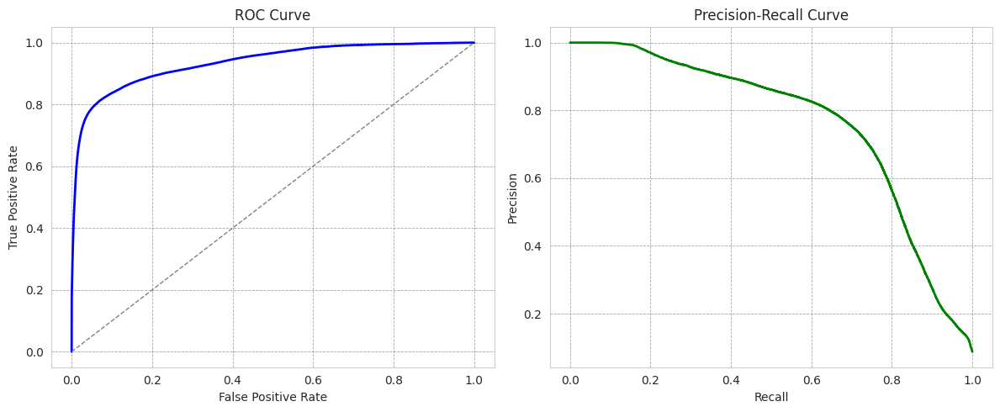
Distribución de métricas#
boxplots(y_test, y_pred)
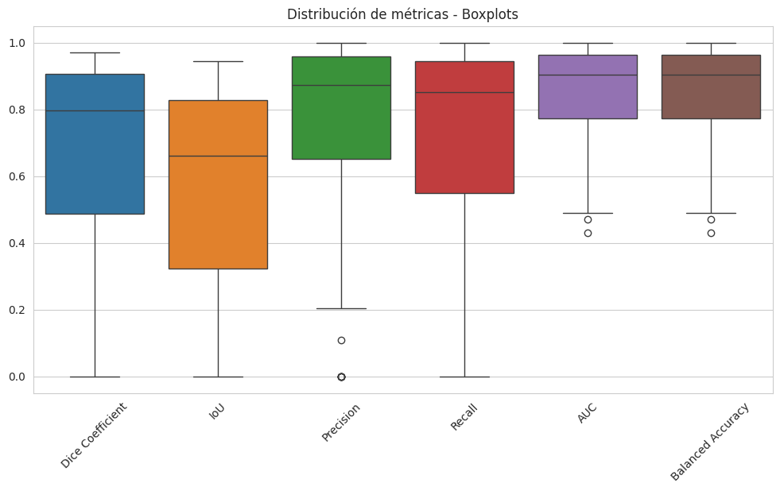
ResUNet#
Arquitectura y entrenamiento#
def res_block(input, num_filters):
"""Bloque residual con BatchNormalization y activación ReLU."""
conv1 = Conv2D(num_filters, (3, 3), padding="same", kernel_initializer='he_normal')(input)
bn1 = BatchNormalization()(conv1)
act1 = Activation("relu")(bn1)
conv2 = Conv2D(num_filters, (3, 3), padding="same", kernel_initializer='he_normal')(act1)
bn2 = BatchNormalization()(conv2)
# Conexión residual
shortcut = Conv2D(num_filters, (1, 1), padding="same", kernel_initializer='he_normal')(input)
shortcut = BatchNormalization()(shortcut)
output = Add()([bn2, shortcut])
output = Activation("relu")(output)
return output
def encoder_block(input, num_filters):
"""Bloque codificador con convoluciones residuales y MaxPooling."""
res = res_block(input, num_filters)
pool = MaxPooling2D((2, 2))(res)
return res, pool
def decoder_block(input, skip_features, num_filters):
"""Bloque decodificador con convoluciones residuales y concatenación con skip connections."""
uconv = Conv2DTranspose(num_filters, (2, 2), strides=2, padding="same")(input)
con = concatenate([uconv, skip_features])
res = res_block(con, num_filters)
return res
def build_resunet(input_shape):
"""Construcción de la arquitectura ResUNet."""
input_layer = Input(input_shape)
# Encoder
s1, p1 = encoder_block(input_layer, 64)
s2, p2 = encoder_block(p1, 128)
s3, p3 = encoder_block(p2, 256)
s4, p4 = encoder_block(p3, 512)
# Bottleneck
b1 = res_block(p4, 1024)
# Decoder
d1 = decoder_block(b1, s4, 512)
d2 = decoder_block(d1, s3, 256)
d3 = decoder_block(d2, s2, 128)
d4 = decoder_block(d3, s1, 64)
# Output layer
output_layer = Conv2D(1, 1, padding="same", activation="sigmoid")(d4)
model = Model(input_layer, output_layer, name="ResUNet")
return model
# Crear el modelo
model_resunet = build_resunet(input_shape=(128, 128, 1))
# Compilar el modelo
model_resunet.compile(loss="binary_crossentropy", optimizer="Adam", metrics=["accuracy"])
checkpointer = [
EarlyStopping(monitor='val_accuracy', verbose=1, restore_best_weights=True, mode='max', patience=10),
ModelCheckpoint(
filepath='resunet_best.keras',
monitor='val_accuracy',
verbose=1,
save_best_only=True,
mode='max'
)
]
history_resunet = None
if os.path.exists('history_resunet.joblib'):
history_resunet = load('history_resunet.joblib')
print("El archivo 'history_resunet.joblib' ya existe. Se ha cargado el historial del entrenamiento.")
else:
history_resunet = model_resunet.fit(
X_train, y_train,
epochs=100,
validation_data=(X_test, y_test),
callbacks=checkpointer,
verbose=2,
batch_size=10
)
dump(history_resunet.history, 'history_resunet.joblib')
print("El entrenamiento se ha completado y el historial ha sido guardado en 'history_resunet.joblib'.")
Epoch 1/100
Epoch 1: val_accuracy improved from -inf to 0.10067, saving model to resunet_best.keras
48/48 - 70s - 1s/step - accuracy: 0.9020 - loss: 0.2566 - val_accuracy: 0.1007 - val_loss: 246.3824
Epoch 2/100
Epoch 2: val_accuracy improved from 0.10067 to 0.44593, saving model to resunet_best.keras
48/48 - 43s - 900ms/step - accuracy: 0.9320 - loss: 0.1801 - val_accuracy: 0.4459 - val_loss: 5.9066
Epoch 3/100
Epoch 3: val_accuracy improved from 0.44593 to 0.49361, saving model to resunet_best.keras
48/48 - 24s - 508ms/step - accuracy: 0.9394 - loss: 0.1625 - val_accuracy: 0.4936 - val_loss: 2.0793
Epoch 4/100
Epoch 4: val_accuracy improved from 0.49361 to 0.70877, saving model to resunet_best.keras
48/48 - 13s - 267ms/step - accuracy: 0.9426 - loss: 0.1493 - val_accuracy: 0.7088 - val_loss: 1.0502
Epoch 5/100
Epoch 5: val_accuracy did not improve from 0.70877
48/48 - 10s - 202ms/step - accuracy: 0.9440 - loss: 0.1475 - val_accuracy: 0.6462 - val_loss: 1.2241
Epoch 6/100
Epoch 6: val_accuracy improved from 0.70877 to 0.89558, saving model to resunet_best.keras
48/48 - 13s - 267ms/step - accuracy: 0.9458 - loss: 0.1400 - val_accuracy: 0.8956 - val_loss: 0.3416
Epoch 7/100
Epoch 7: val_accuracy did not improve from 0.89558
48/48 - 17s - 358ms/step - accuracy: 0.9501 - loss: 0.1243 - val_accuracy: 0.8454 - val_loss: 0.5483
Epoch 8/100
Epoch 8: val_accuracy improved from 0.89558 to 0.89830, saving model to resunet_best.keras
48/48 - 12s - 255ms/step - accuracy: 0.9532 - loss: 0.1215 - val_accuracy: 0.8983 - val_loss: 0.2812
Epoch 9/100
Epoch 9: val_accuracy did not improve from 0.89830
48/48 - 18s - 374ms/step - accuracy: 0.9544 - loss: 0.1165 - val_accuracy: 0.8979 - val_loss: 0.2778
Epoch 10/100
Epoch 10: val_accuracy improved from 0.89830 to 0.94072, saving model to resunet_best.keras
48/48 - 13s - 267ms/step - accuracy: 0.9574 - loss: 0.1082 - val_accuracy: 0.9407 - val_loss: 0.1662
Epoch 11/100
Epoch 11: val_accuracy improved from 0.94072 to 0.94954, saving model to resunet_best.keras
48/48 - 12s - 258ms/step - accuracy: 0.9566 - loss: 0.1083 - val_accuracy: 0.9495 - val_loss: 0.1934
Epoch 12/100
Epoch 12: val_accuracy did not improve from 0.94954
48/48 - 18s - 366ms/step - accuracy: 0.9582 - loss: 0.1066 - val_accuracy: 0.9422 - val_loss: 0.2106
Epoch 13/100
Epoch 13: val_accuracy did not improve from 0.94954
48/48 - 10s - 215ms/step - accuracy: 0.9662 - loss: 0.0842 - val_accuracy: 0.9445 - val_loss: 0.1595
Epoch 14/100
Epoch 14: val_accuracy did not improve from 0.94954
48/48 - 10s - 217ms/step - accuracy: 0.9636 - loss: 0.0874 - val_accuracy: 0.9438 - val_loss: 0.1802
Epoch 15/100
Epoch 15: val_accuracy did not improve from 0.94954
48/48 - 10s - 207ms/step - accuracy: 0.9679 - loss: 0.0779 - val_accuracy: 0.9485 - val_loss: 0.1695
Epoch 16/100
Epoch 16: val_accuracy did not improve from 0.94954
48/48 - 10s - 207ms/step - accuracy: 0.9690 - loss: 0.0743 - val_accuracy: 0.9476 - val_loss: 0.1878
Epoch 17/100
Epoch 17: val_accuracy improved from 0.94954 to 0.95216, saving model to resunet_best.keras
48/48 - 17s - 347ms/step - accuracy: 0.9711 - loss: 0.0691 - val_accuracy: 0.9522 - val_loss: 0.1619
Epoch 18/100
Epoch 18: val_accuracy did not improve from 0.95216
48/48 - 10s - 199ms/step - accuracy: 0.9710 - loss: 0.0681 - val_accuracy: 0.9458 - val_loss: 0.1905
Epoch 19/100
Epoch 19: val_accuracy did not improve from 0.95216
48/48 - 10s - 214ms/step - accuracy: 0.9702 - loss: 0.0711 - val_accuracy: 0.9086 - val_loss: 0.2393
Epoch 20/100
Epoch 20: val_accuracy did not improve from 0.95216
48/48 - 11s - 221ms/step - accuracy: 0.9676 - loss: 0.0786 - val_accuracy: 0.9319 - val_loss: 0.2311
Epoch 21/100
Epoch 21: val_accuracy did not improve from 0.95216
48/48 - 10s - 208ms/step - accuracy: 0.9697 - loss: 0.0732 - val_accuracy: 0.9493 - val_loss: 0.2120
Epoch 22/100
Epoch 22: val_accuracy did not improve from 0.95216
48/48 - 10s - 210ms/step - accuracy: 0.9771 - loss: 0.0545 - val_accuracy: 0.9495 - val_loss: 0.2092
Epoch 23/100
Epoch 23: val_accuracy did not improve from 0.95216
48/48 - 10s - 206ms/step - accuracy: 0.9794 - loss: 0.0489 - val_accuracy: 0.9506 - val_loss: 0.1638
Epoch 24/100
Epoch 24: val_accuracy did not improve from 0.95216
48/48 - 10s - 207ms/step - accuracy: 0.9792 - loss: 0.0478 - val_accuracy: 0.9473 - val_loss: 0.2019
Epoch 25/100
Epoch 25: val_accuracy improved from 0.95216 to 0.95277, saving model to resunet_best.keras
48/48 - 21s - 445ms/step - accuracy: 0.9822 - loss: 0.0418 - val_accuracy: 0.9528 - val_loss: 0.1990
Epoch 26/100
Epoch 26: val_accuracy did not improve from 0.95277
48/48 - 30s - 625ms/step - accuracy: 0.9821 - loss: 0.0411 - val_accuracy: 0.9514 - val_loss: 0.2009
Epoch 27/100
Epoch 27: val_accuracy did not improve from 0.95277
48/48 - 10s - 210ms/step - accuracy: 0.9836 - loss: 0.0365 - val_accuracy: 0.9524 - val_loss: 0.1817
Epoch 28/100
Epoch 28: val_accuracy did not improve from 0.95277
48/48 - 10s - 217ms/step - accuracy: 0.9833 - loss: 0.0383 - val_accuracy: 0.9516 - val_loss: 0.2076
Epoch 29/100
Epoch 29: val_accuracy did not improve from 0.95277
48/48 - 10s - 205ms/step - accuracy: 0.9842 - loss: 0.0349 - val_accuracy: 0.9518 - val_loss: 0.2146
Epoch 30/100
Epoch 30: val_accuracy did not improve from 0.95277
48/48 - 10s - 210ms/step - accuracy: 0.9851 - loss: 0.0331 - val_accuracy: 0.9522 - val_loss: 0.2082
Epoch 31/100
Epoch 31: val_accuracy did not improve from 0.95277
48/48 - 10s - 211ms/step - accuracy: 0.9853 - loss: 0.0331 - val_accuracy: 0.9485 - val_loss: 0.2197
Epoch 32/100
Epoch 32: val_accuracy did not improve from 0.95277
48/48 - 10s - 217ms/step - accuracy: 0.9808 - loss: 0.0464 - val_accuracy: 0.9489 - val_loss: 0.2060
Epoch 33/100
Epoch 33: val_accuracy did not improve from 0.95277
48/48 - 10s - 212ms/step - accuracy: 0.9842 - loss: 0.0356 - val_accuracy: 0.9504 - val_loss: 0.2342
Epoch 34/100
Epoch 34: val_accuracy improved from 0.95277 to 0.95293, saving model to resunet_best.keras
48/48 - 22s - 451ms/step - accuracy: 0.9864 - loss: 0.0289 - val_accuracy: 0.9529 - val_loss: 0.2086
Epoch 35/100
Epoch 35: val_accuracy improved from 0.95293 to 0.95417, saving model to resunet_best.keras
48/48 - 36s - 758ms/step - accuracy: 0.9879 - loss: 0.0259 - val_accuracy: 0.9542 - val_loss: 0.2134
Epoch 36/100
Epoch 36: val_accuracy did not improve from 0.95417
48/48 - 10s - 207ms/step - accuracy: 0.9879 - loss: 0.0254 - val_accuracy: 0.9531 - val_loss: 0.2198
Epoch 37/100
Epoch 37: val_accuracy did not improve from 0.95417
48/48 - 10s - 210ms/step - accuracy: 0.9890 - loss: 0.0229 - val_accuracy: 0.9504 - val_loss: 0.2269
Epoch 38/100
Epoch 38: val_accuracy did not improve from 0.95417
48/48 - 10s - 218ms/step - accuracy: 0.9893 - loss: 0.0223 - val_accuracy: 0.9508 - val_loss: 0.2419
Epoch 39/100
Epoch 39: val_accuracy did not improve from 0.95417
48/48 - 10s - 205ms/step - accuracy: 0.9898 - loss: 0.0210 - val_accuracy: 0.9538 - val_loss: 0.2386
Epoch 40/100
Epoch 40: val_accuracy did not improve from 0.95417
48/48 - 10s - 216ms/step - accuracy: 0.9898 - loss: 0.0208 - val_accuracy: 0.9540 - val_loss: 0.2426
Epoch 41/100
Epoch 41: val_accuracy did not improve from 0.95417
48/48 - 10s - 207ms/step - accuracy: 0.9898 - loss: 0.0204 - val_accuracy: 0.9528 - val_loss: 0.2476
Epoch 42/100
Epoch 42: val_accuracy did not improve from 0.95417
48/48 - 9s - 197ms/step - accuracy: 0.9900 - loss: 0.0205 - val_accuracy: 0.9539 - val_loss: 0.2445
Epoch 43/100
Epoch 43: val_accuracy did not improve from 0.95417
48/48 - 10s - 199ms/step - accuracy: 0.9905 - loss: 0.0189 - val_accuracy: 0.9536 - val_loss: 0.2400
Epoch 44/100
Epoch 44: val_accuracy did not improve from 0.95417
48/48 - 10s - 214ms/step - accuracy: 0.9905 - loss: 0.0191 - val_accuracy: 0.9532 - val_loss: 0.2494
Epoch 45/100
Epoch 45: val_accuracy did not improve from 0.95417
48/48 - 10s - 201ms/step - accuracy: 0.9911 - loss: 0.0172 - val_accuracy: 0.9539 - val_loss: 0.2635
Epoch 45: early stopping
Restoring model weights from the end of the best epoch: 35.
El entrenamiento se ha completado y el historial ha sido guardado en 'history_resunet.joblib'.
graficar_historial(history_resunet, nombre_modelo="ResUNet")
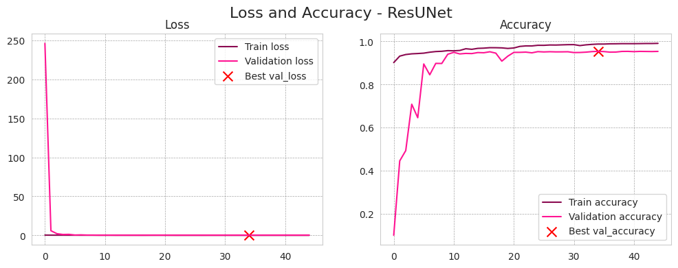
Métricas de evaluación#
y_pred=model_resunet.predict(X_test,verbose=0)
y_pred_thresholded = y_pred > 0.5
IOU_keras = MeanIoU(num_classes=2)
IOU_keras.update_state(y_pred_thresholded, y_test)
iou_score = IOU_keras.result().numpy()
prec_score = Precision()
prec_score.update_state(y_pred_thresholded, y_test)
p = prec_score.result().numpy()
recall_score = Recall()
recall_score.update_state(y_pred_thresholded, y_test)
r = recall_score.result().numpy()
auc_score = AUC()
auc_score.update_state(y_pred_thresholded, y_test)
auc = auc_score.result().numpy()
intersection = np.sum(y_pred_thresholded * y_test)
union = np.sum(y_pred_thresholded) + np.sum(y_test)
dice_coefficient = (2. * intersection) / (union + 1e-7) # Evitar división por cero
balanced_accuracy = (p + r) / 2
metrics_dict = {
"Dice Coefficient": dice_coefficient,
"Mean IoU": iou_score,
"Precision": p,
"Recall": r,
"AUC": auc,
"Balanced Accuracy": balanced_accuracy}
df_metrics_resunet = pd.DataFrame(metrics_dict, index=["Segmentación ResUNet"])
df_metrics_resunet.to_csv("resultados_resunet.csv")
df_metrics_resunet
| Dice Coefficient | Mean IoU | Precision | Recall | AUC | Balanced Accuracy | |
|---|---|---|---|---|---|---|
| Segmentación ResUNet | 0.727015 | 0.762711 | 0.668666 | 0.796554 | 0.884686 | 0.73261 |
Comparación visual#
evaluar_modelo(model_resunet, X_test, y_test, nombre_modelo="ResUNet")
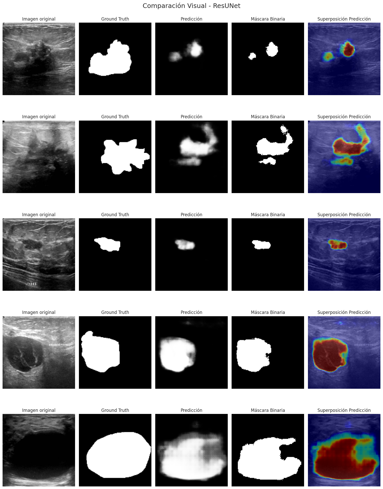
Mapas de error#
visualizar_segmentacion(model_resunet, X_test, y_test, nombre_modelo="ResUNet")
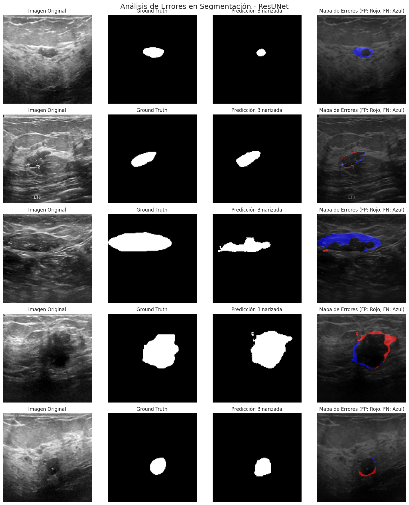
Curvas de evaluación#
plot_roc_pr_curves(y_test, y_pred)
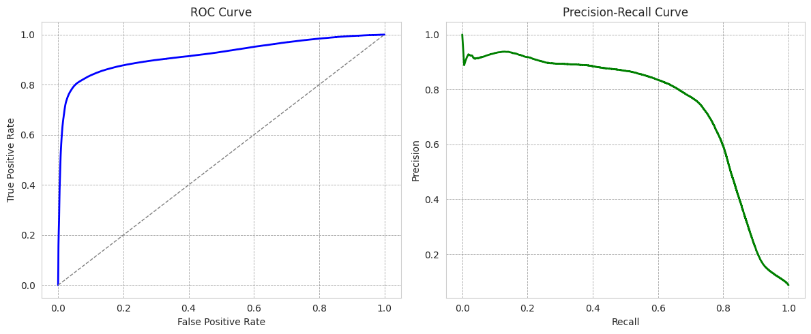
Distribución de métricas#
boxplots(y_test, y_pred)
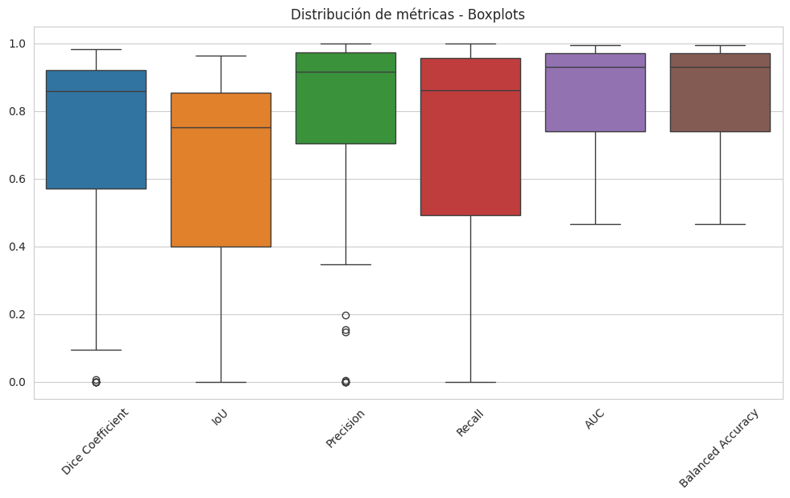
PSPNet#
Arquitectura y entrenamiento#
# Función para el bloque convolucional
def conv_block(input, num_filters):
conv = Conv2D(num_filters, (3, 3), activation="relu", padding="same", kernel_initializer='he_normal')(input)
conv = Conv2D(num_filters, (3, 3), activation="relu", padding="same", kernel_initializer='he_normal')(conv)
return conv
# Bloque de encoder
def encoder_block(input, num_filters):
conv = conv_block(input, num_filters)
pool = MaxPooling2D((2, 2))(conv)
return conv, pool
# Módulo de Pooling Piramidal (PPM)
def pyramid_pooling_module(input):
pool_sizes = [1, 2, 3, 6]
pooled_outputs = []
h, w = input.shape[1], input.shape[2]
for size in pool_sizes:
pool = AveragePooling2D(pool_size=(h//size, w//size), strides=(h//size, w//size))(input)
conv = Conv2D(256, (1, 1), activation='relu', padding='same')(pool)
up = UpSampling2D(size=(h//size, w//size), interpolation='bilinear')(conv)
pooled_outputs.append(up)
concat = concatenate([input] + pooled_outputs)
return concat
# Bloque de decoder
def decoder_block(input, num_filters):
conv = Conv2D(num_filters, (3, 3), activation='relu', padding='same', kernel_initializer='he_normal')(input)
conv = Conv2D(num_filters, (3, 3), activation='relu', padding='same', kernel_initializer='he_normal')(conv)
return conv
# Construcción del modelo PSPNet
def build_pspnet(input_shape):
input_layer = Input(input_shape)
# Encoder (similar a Unet pero sin skip connections directas)
s1, p1 = encoder_block(input_layer, 64)
s2, p2 = encoder_block(p1, 128)
s3, p3 = encoder_block(p2, 256)
s4, p4 = encoder_block(p3, 512)
# PPM
ppm = pyramid_pooling_module(p4)
# Decoder
d1 = decoder_block(ppm, 512)
d2 = decoder_block(d1, 256)
d3 = decoder_block(d2, 128)
d4 = decoder_block(d3, 64)
# Salida
upsampled_output = UpSampling2D(size=(16, 16), interpolation='bilinear')(d4)
output_layer = Conv2D(1, (1, 1), activation='sigmoid', padding='same')(upsampled_output)
model = Model(input_layer, output_layer, name="PSPNet")
return model
# Crear el modelo PSPNet
model_pspnet = build_pspnet(input_shape=(128, 128, 1))
model_pspnet.compile(loss="binary_crossentropy", optimizer=Adam(), metrics=["accuracy"])
# Callbacks
checkpointer = [
EarlyStopping(monitor='val_accuracy', verbose=1, restore_best_weights=True, mode='max', patience=10),
ModelCheckpoint(filepath='model_pspnet.weights.best.keras', monitor='val_accuracy', verbose=1, save_best_only=True, mode='max')
]
# Entrenamiento
data_history_pspnet = None
if os.path.exists('history_pspnet.joblib'):
data_history_pspnet = load('history_pspnet.joblib')
print("Historial de entrenamiento cargado desde 'history_pspnet.joblib'.")
else:
data_history_pspnet = model_pspnet.fit(
X_train, y_train,
epochs=100,
validation_data=(X_val, y_val),
callbacks=checkpointer,
verbose=2,
batch_size=10
)
dump(data_history_pspnet.history, 'history_pspnet.joblib')
print("Entrenamiento completado y guardado en 'history_pspnet.joblib'.")
Epoch 1/100
Epoch 1: val_accuracy improved from -inf to 0.90499, saving model to model_pspnet.weights.best.keras
48/48 - 31s - 644ms/step - accuracy: 0.8505 - loss: 0.6005 - val_accuracy: 0.9050 - val_loss: 0.2519
Epoch 2/100
Epoch 2: val_accuracy did not improve from 0.90499
48/48 - 4s - 92ms/step - accuracy: 0.9070 - loss: 0.2570 - val_accuracy: 0.9050 - val_loss: 0.2705
Epoch 3/100
Epoch 3: val_accuracy did not improve from 0.90499
48/48 - 5s - 108ms/step - accuracy: 0.9062 - loss: 0.2575 - val_accuracy: 0.8909 - val_loss: 0.2939
Epoch 4/100
Epoch 4: val_accuracy did not improve from 0.90499
48/48 - 5s - 105ms/step - accuracy: 0.9057 - loss: 0.2613 - val_accuracy: 0.9050 - val_loss: 0.2515
Epoch 5/100
Epoch 5: val_accuracy did not improve from 0.90499
48/48 - 4s - 93ms/step - accuracy: 0.9070 - loss: 0.2431 - val_accuracy: 0.9050 - val_loss: 0.2440
Epoch 6/100
Epoch 6: val_accuracy improved from 0.90499 to 0.90501, saving model to model_pspnet.weights.best.keras
48/48 - 6s - 133ms/step - accuracy: 0.9070 - loss: 0.2503 - val_accuracy: 0.9050 - val_loss: 0.2387
Epoch 7/100
Epoch 7: val_accuracy did not improve from 0.90501
48/48 - 4s - 92ms/step - accuracy: 0.9070 - loss: 0.2399 - val_accuracy: 0.9050 - val_loss: 0.2354
Epoch 8/100
Epoch 8: val_accuracy improved from 0.90501 to 0.90509, saving model to model_pspnet.weights.best.keras
48/48 - 6s - 115ms/step - accuracy: 0.9071 - loss: 0.2412 - val_accuracy: 0.9051 - val_loss: 0.2438
Epoch 9/100
Epoch 9: val_accuracy improved from 0.90509 to 0.90630, saving model to model_pspnet.weights.best.keras
48/48 - 10s - 213ms/step - accuracy: 0.9074 - loss: 0.2266 - val_accuracy: 0.9063 - val_loss: 0.2542
Epoch 10/100
Epoch 10: val_accuracy did not improve from 0.90630
48/48 - 9s - 190ms/step - accuracy: 0.9083 - loss: 0.2253 - val_accuracy: 0.9063 - val_loss: 0.2132
Epoch 11/100
Epoch 11: val_accuracy did not improve from 0.90630
48/48 - 5s - 105ms/step - accuracy: 0.9127 - loss: 0.2132 - val_accuracy: 0.9055 - val_loss: 0.2319
Epoch 12/100
Epoch 12: val_accuracy improved from 0.90630 to 0.91141, saving model to model_pspnet.weights.best.keras
48/48 - 6s - 116ms/step - accuracy: 0.9131 - loss: 0.1969 - val_accuracy: 0.9114 - val_loss: 0.2039
Epoch 13/100
Epoch 13: val_accuracy improved from 0.91141 to 0.91294, saving model to model_pspnet.weights.best.keras
48/48 - 5s - 114ms/step - accuracy: 0.9175 - loss: 0.1989 - val_accuracy: 0.9129 - val_loss: 0.2163
Epoch 14/100
Epoch 14: val_accuracy improved from 0.91294 to 0.91382, saving model to model_pspnet.weights.best.keras
48/48 - 5s - 113ms/step - accuracy: 0.9184 - loss: 0.1937 - val_accuracy: 0.9138 - val_loss: 0.1982
Epoch 15/100
Epoch 15: val_accuracy improved from 0.91382 to 0.91466, saving model to model_pspnet.weights.best.keras
48/48 - 10s - 214ms/step - accuracy: 0.9279 - loss: 0.1741 - val_accuracy: 0.9147 - val_loss: 0.1904
Epoch 16/100
Epoch 16: val_accuracy improved from 0.91466 to 0.92819, saving model to model_pspnet.weights.best.keras
48/48 - 5s - 114ms/step - accuracy: 0.9308 - loss: 0.1635 - val_accuracy: 0.9282 - val_loss: 0.1683
Epoch 17/100
Epoch 17: val_accuracy did not improve from 0.92819
48/48 - 4s - 92ms/step - accuracy: 0.9333 - loss: 0.1555 - val_accuracy: 0.9269 - val_loss: 0.1836
Epoch 18/100
Epoch 18: val_accuracy did not improve from 0.92819
48/48 - 4s - 92ms/step - accuracy: 0.9367 - loss: 0.1486 - val_accuracy: 0.9268 - val_loss: 0.1672
Epoch 19/100
Epoch 19: val_accuracy did not improve from 0.92819
48/48 - 4s - 92ms/step - accuracy: 0.9364 - loss: 0.1501 - val_accuracy: 0.9276 - val_loss: 0.1854
Epoch 20/100
Epoch 20: val_accuracy did not improve from 0.92819
48/48 - 5s - 106ms/step - accuracy: 0.9376 - loss: 0.1535 - val_accuracy: 0.9210 - val_loss: 0.1922
Epoch 21/100
Epoch 21: val_accuracy improved from 0.92819 to 0.93408, saving model to model_pspnet.weights.best.keras
48/48 - 6s - 127ms/step - accuracy: 0.9455 - loss: 0.1267 - val_accuracy: 0.9341 - val_loss: 0.2202
Epoch 22/100
Epoch 22: val_accuracy improved from 0.93408 to 0.93581, saving model to model_pspnet.weights.best.keras
48/48 - 5s - 111ms/step - accuracy: 0.9519 - loss: 0.1101 - val_accuracy: 0.9358 - val_loss: 0.2421
Epoch 23/100
Epoch 23: val_accuracy did not improve from 0.93581
48/48 - 9s - 194ms/step - accuracy: 0.9566 - loss: 0.1004 - val_accuracy: 0.9317 - val_loss: 0.1863
Epoch 24/100
Epoch 24: val_accuracy did not improve from 0.93581
48/48 - 5s - 105ms/step - accuracy: 0.9436 - loss: 0.1331 - val_accuracy: 0.9225 - val_loss: 0.1821
Epoch 25/100
Epoch 25: val_accuracy did not improve from 0.93581
48/48 - 5s - 106ms/step - accuracy: 0.9522 - loss: 0.1149 - val_accuracy: 0.9346 - val_loss: 0.1656
Epoch 26/100
Epoch 26: val_accuracy improved from 0.93581 to 0.94076, saving model to model_pspnet.weights.best.keras
48/48 - 6s - 130ms/step - accuracy: 0.9598 - loss: 0.0934 - val_accuracy: 0.9408 - val_loss: 0.1771
Epoch 27/100
Epoch 27: val_accuracy did not improve from 0.94076
48/48 - 4s - 92ms/step - accuracy: 0.9641 - loss: 0.0809 - val_accuracy: 0.9378 - val_loss: 0.1979
Epoch 28/100
Epoch 28: val_accuracy did not improve from 0.94076
48/48 - 4s - 91ms/step - accuracy: 0.9635 - loss: 0.0827 - val_accuracy: 0.9396 - val_loss: 0.1728
Epoch 29/100
Epoch 29: val_accuracy did not improve from 0.94076
48/48 - 4s - 93ms/step - accuracy: 0.9668 - loss: 0.0758 - val_accuracy: 0.9405 - val_loss: 0.2022
Epoch 30/100
Epoch 30: val_accuracy improved from 0.94076 to 0.94251, saving model to model_pspnet.weights.best.keras
48/48 - 5s - 113ms/step - accuracy: 0.9689 - loss: 0.0699 - val_accuracy: 0.9425 - val_loss: 0.2134
Epoch 31/100
Epoch 31: val_accuracy did not improve from 0.94251
48/48 - 4s - 92ms/step - accuracy: 0.9719 - loss: 0.0624 - val_accuracy: 0.9400 - val_loss: 0.2119
Epoch 32/100
Epoch 32: val_accuracy did not improve from 0.94251
48/48 - 5s - 107ms/step - accuracy: 0.9704 - loss: 0.0661 - val_accuracy: 0.9412 - val_loss: 0.2012
Epoch 33/100
Epoch 33: val_accuracy did not improve from 0.94251
48/48 - 4s - 92ms/step - accuracy: 0.9702 - loss: 0.0687 - val_accuracy: 0.9420 - val_loss: 0.2169
Epoch 34/100
Epoch 34: val_accuracy did not improve from 0.94251
48/48 - 5s - 107ms/step - accuracy: 0.9732 - loss: 0.0603 - val_accuracy: 0.9412 - val_loss: 0.2089
Epoch 35/100
Epoch 35: val_accuracy did not improve from 0.94251
48/48 - 4s - 91ms/step - accuracy: 0.9668 - loss: 0.0753 - val_accuracy: 0.9385 - val_loss: 0.2394
Epoch 36/100
Epoch 36: val_accuracy did not improve from 0.94251
48/48 - 5s - 107ms/step - accuracy: 0.9705 - loss: 0.0660 - val_accuracy: 0.9412 - val_loss: 0.2189
Epoch 37/100
Epoch 37: val_accuracy improved from 0.94251 to 0.94509, saving model to model_pspnet.weights.best.keras
48/48 - 6s - 126ms/step - accuracy: 0.9743 - loss: 0.0577 - val_accuracy: 0.9451 - val_loss: 0.2183
Epoch 38/100
Epoch 38: val_accuracy did not improve from 0.94509
48/48 - 9s - 193ms/step - accuracy: 0.9761 - loss: 0.0524 - val_accuracy: 0.9416 - val_loss: 0.2409
Epoch 39/100
Epoch 39: val_accuracy did not improve from 0.94509
48/48 - 5s - 104ms/step - accuracy: 0.9780 - loss: 0.0481 - val_accuracy: 0.9415 - val_loss: 0.2395
Epoch 40/100
Epoch 40: val_accuracy did not improve from 0.94509
48/48 - 4s - 92ms/step - accuracy: 0.9768 - loss: 0.0516 - val_accuracy: 0.9409 - val_loss: 0.2758
Epoch 41/100
Epoch 41: val_accuracy did not improve from 0.94509
48/48 - 5s - 105ms/step - accuracy: 0.9788 - loss: 0.0461 - val_accuracy: 0.9394 - val_loss: 0.2090
Epoch 42/100
Epoch 42: val_accuracy did not improve from 0.94509
48/48 - 4s - 91ms/step - accuracy: 0.9790 - loss: 0.0461 - val_accuracy: 0.9407 - val_loss: 0.2359
Epoch 43/100
Epoch 43: val_accuracy did not improve from 0.94509
48/48 - 4s - 93ms/step - accuracy: 0.9778 - loss: 0.0505 - val_accuracy: 0.9412 - val_loss: 0.1996
Epoch 44/100
Epoch 44: val_accuracy did not improve from 0.94509
48/48 - 4s - 92ms/step - accuracy: 0.9777 - loss: 0.0508 - val_accuracy: 0.9358 - val_loss: 0.2123
Epoch 45/100
Epoch 45: val_accuracy did not improve from 0.94509
48/48 - 5s - 107ms/step - accuracy: 0.9770 - loss: 0.0515 - val_accuracy: 0.9412 - val_loss: 0.2022
Epoch 46/100
Epoch 46: val_accuracy did not improve from 0.94509
48/48 - 5s - 105ms/step - accuracy: 0.9808 - loss: 0.0416 - val_accuracy: 0.9433 - val_loss: 0.2376
Epoch 47/100
Epoch 47: val_accuracy did not improve from 0.94509
48/48 - 5s - 107ms/step - accuracy: 0.9822 - loss: 0.0380 - val_accuracy: 0.9437 - val_loss: 0.2655
Epoch 47: early stopping
Restoring model weights from the end of the best epoch: 37.
Entrenamiento completado y guardado en 'history_pspnet.joblib'.
Métricas de evaluación#
y_pred=model_pspnet.predict(X_test,verbose=0)
y_pred_thresholded = y_pred > 0.5
IOU_keras = MeanIoU(num_classes=2)
IOU_keras.update_state(y_pred_thresholded, y_test)
iou_score = IOU_keras.result().numpy()
prec_score = Precision()
prec_score.update_state(y_pred_thresholded, y_test)
p = prec_score.result().numpy()
recall_score = Recall()
recall_score.update_state(y_pred_thresholded, y_test)
r = recall_score.result().numpy()
auc_score = AUC()
auc_score.update_state(y_pred_thresholded, y_test)
auc = auc_score.result().numpy()
intersection = np.sum(y_pred_thresholded * y_test)
union = np.sum(y_pred_thresholded) + np.sum(y_test)
dice_coefficient = (2. * intersection) / (union + 1e-7) # Evitar división por cero
balanced_accuracy = (p + r) / 2
metrics_dict = {
"Dice Coefficient": dice_coefficient,
"Mean IoU": iou_score,
"Precision": p,
"Recall": r,
"AUC": auc,
"Balanced Accuracy": balanced_accuracy}
df_metrics_pspnet = pd.DataFrame(metrics_dict, index=["Segmentación PSPNet"])
df_metrics_pspnet.to_csv("resultados_pspnet.csv")
df_metrics_pspnet
| Dice Coefficient | Mean IoU | Precision | Recall | AUC | Balanced Accuracy | |
|---|---|---|---|---|---|---|
| Segmentación PSPNet | 0.70678 | 0.746434 | 0.684903 | 0.730197 | 0.852291 | 0.70755 |
graficar_historial(data_history_pspnet, nombre_modelo="PSPNet")
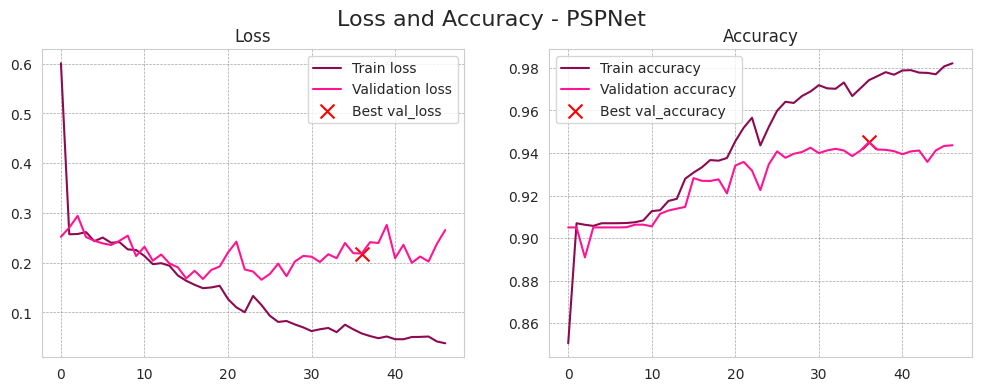
Comparación visual#
evaluar_modelo(model_pspnet, X_test, y_test, nombre_modelo="PSPNet")
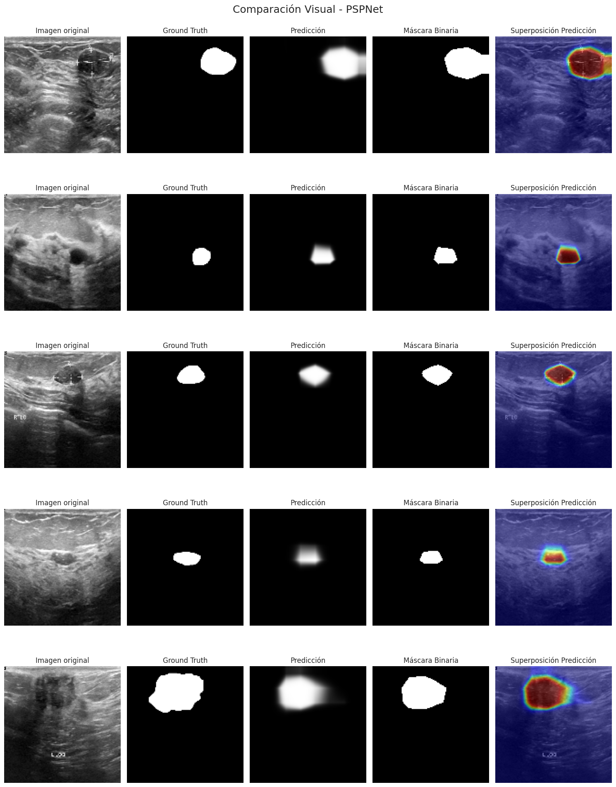
Mapas de error#
visualizar_segmentacion(model_pspnet, X_test, y_test, nombre_modelo="PSPNet")
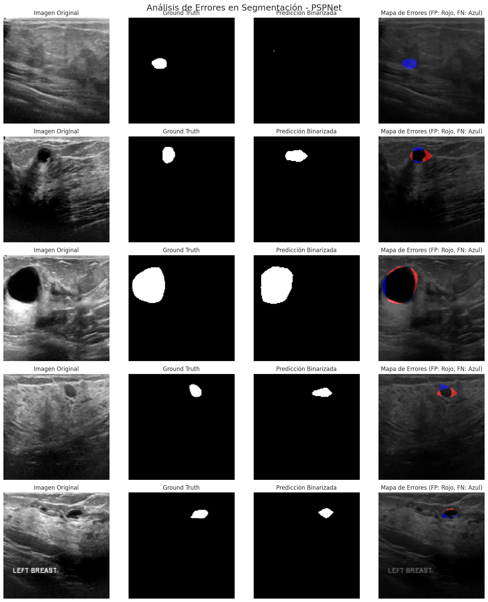
Curvas de evaluación#
plot_roc_pr_curves(y_test, y_pred)
Distribución de métricas#
boxplots(y_test, y_pred)
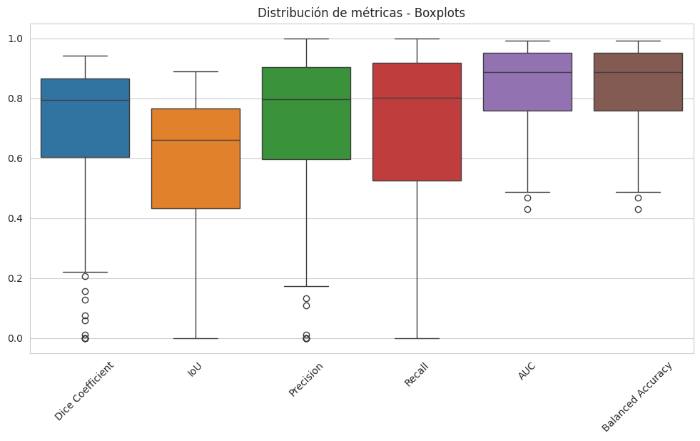
FCN#
Arquitectura y entrenamiento#
def conv_block(input, num_filters):
conv = Conv2D(num_filters, (3, 3), activation="relu", padding="same", kernel_initializer='he_normal')(input)
conv = Conv2D(num_filters, (3, 3), activation="relu", padding="same", kernel_initializer='he_normal')(conv)
return conv
def encoder_block(input, num_filters):
conv = conv_block(input, num_filters)
pool = MaxPooling2D((2, 2))(conv)
return conv, pool
def build_fcn(input_shape):
input_layer = Input(input_shape)
s1, p1 = encoder_block(input_layer, 64)
s2, p2 = encoder_block(p1, 128)
s3, p3 = encoder_block(p2, 256)
s4, p4 = encoder_block(p3, 512)
b1 = conv_block(p4, 1024)
fcn_conv1 = Conv2D(512, (3, 3), activation="relu", padding="same")(b1)
fcn_conv2 = Conv2D(256, (3, 3), activation="relu", padding="same")(fcn_conv1)
up1 = UpSampling2D((2, 2))(fcn_conv2)
up2 = UpSampling2D((2, 2))(up1)
up3 = UpSampling2D((2, 2))(up2)
up4 = UpSampling2D((2, 2))(up3)
output_layer = Conv2D(1, (1, 1), activation="sigmoid", padding="same")(up4)
model = Model(input_layer, output_layer, name="FCN")
return model
model_fcn = build_fcn(input_shape=(128, 128, 1))
model_fcn.compile(loss="binary_crossentropy", optimizer="Adam", metrics=["accuracy"])
checkpointer = [
EarlyStopping(monitor='val_accuracy', verbose=1, restore_best_weights=True, mode='max', patience=10),
ModelCheckpoint(
filepath='model_fcn.weights.best.keras',
monitor='val_accuracy',
verbose=1,
save_best_only=True,
mode='max'
)
]
history_fcn = None
if os.path.exists('history_fcn.joblib'):
history_fcn = load('history_fcn.joblib')
print("El archivo 'history_fcn.joblib' ya existe. Se ha cargado el historial del entrenamiento.")
else:
history_fcn = model_fcn.fit(
X_train, y_train,
epochs=100,
validation_data=(X_val, y_val),
callbacks=checkpointer,
verbose=2,
batch_size=10
)
dump(history_fcn.history, 'history_fcn.joblib')
print("El entrenamiento se ha completado y el historial ha sido guardado en 'history_fcn.joblib'.")
Epoch 1/100
Epoch 1: val_accuracy improved from -inf to 0.90499, saving model to model_fcn.weights.best.keras
48/48 - 20s - 421ms/step - accuracy: 0.9038 - loss: 9.4791 - val_accuracy: 0.9050 - val_loss: 0.2865
Epoch 2/100
Epoch 2: val_accuracy did not improve from 0.90499
48/48 - 9s - 184ms/step - accuracy: 0.9070 - loss: 0.2604 - val_accuracy: 0.9050 - val_loss: 0.2522
Epoch 3/100
Epoch 3: val_accuracy did not improve from 0.90499
48/48 - 4s - 91ms/step - accuracy: 0.9070 - loss: 0.2406 - val_accuracy: 0.9050 - val_loss: 0.2943
Epoch 4/100
Epoch 4: val_accuracy did not improve from 0.90499
48/48 - 5s - 107ms/step - accuracy: 0.9070 - loss: 0.2385 - val_accuracy: 0.9050 - val_loss: 0.2298
Epoch 5/100
Epoch 5: val_accuracy did not improve from 0.90499
48/48 - 5s - 106ms/step - accuracy: 0.9070 - loss: 0.2274 - val_accuracy: 0.9050 - val_loss: 0.2237
Epoch 6/100
Epoch 6: val_accuracy improved from 0.90499 to 0.91644, saving model to model_fcn.weights.best.keras
48/48 - 7s - 140ms/step - accuracy: 0.9149 - loss: 0.2163 - val_accuracy: 0.9164 - val_loss: 0.2291
Epoch 7/100
Epoch 7: val_accuracy improved from 0.91644 to 0.91984, saving model to model_fcn.weights.best.keras
48/48 - 10s - 216ms/step - accuracy: 0.9194 - loss: 0.2183 - val_accuracy: 0.9198 - val_loss: 0.2054
Epoch 8/100
Epoch 8: val_accuracy improved from 0.91984 to 0.92282, saving model to model_fcn.weights.best.keras
48/48 - 10s - 208ms/step - accuracy: 0.9214 - loss: 0.2057 - val_accuracy: 0.9228 - val_loss: 0.2057
Epoch 9/100
Epoch 9: val_accuracy did not improve from 0.92282
48/48 - 9s - 181ms/step - accuracy: 0.9238 - loss: 0.1949 - val_accuracy: 0.9194 - val_loss: 0.1958
Epoch 10/100
Epoch 10: val_accuracy improved from 0.92282 to 0.92709, saving model to model_fcn.weights.best.keras
48/48 - 7s - 141ms/step - accuracy: 0.9306 - loss: 0.1782 - val_accuracy: 0.9271 - val_loss: 0.1760
Epoch 11/100
Epoch 11: val_accuracy improved from 0.92709 to 0.92903, saving model to model_fcn.weights.best.keras
48/48 - 11s - 220ms/step - accuracy: 0.9354 - loss: 0.1626 - val_accuracy: 0.9290 - val_loss: 0.1752
Epoch 12/100
Epoch 12: val_accuracy did not improve from 0.92903
48/48 - 5s - 94ms/step - accuracy: 0.9343 - loss: 0.1649 - val_accuracy: 0.9266 - val_loss: 0.1869
Epoch 13/100
Epoch 13: val_accuracy improved from 0.92903 to 0.93025, saving model to model_fcn.weights.best.keras
48/48 - 7s - 138ms/step - accuracy: 0.9373 - loss: 0.1558 - val_accuracy: 0.9302 - val_loss: 0.1850
Epoch 14/100
Epoch 14: val_accuracy did not improve from 0.93025
48/48 - 4s - 92ms/step - accuracy: 0.9395 - loss: 0.1459 - val_accuracy: 0.9297 - val_loss: 0.1871
Epoch 15/100
Epoch 15: val_accuracy did not improve from 0.93025
48/48 - 4s - 92ms/step - accuracy: 0.9430 - loss: 0.1384 - val_accuracy: 0.9258 - val_loss: 0.1918
Epoch 16/100
Epoch 16: val_accuracy improved from 0.93025 to 0.93363, saving model to model_fcn.weights.best.keras
48/48 - 9s - 184ms/step - accuracy: 0.9448 - loss: 0.1326 - val_accuracy: 0.9336 - val_loss: 0.1688
Epoch 17/100
Epoch 17: val_accuracy improved from 0.93363 to 0.93579, saving model to model_fcn.weights.best.keras
48/48 - 8s - 170ms/step - accuracy: 0.9500 - loss: 0.1177 - val_accuracy: 0.9358 - val_loss: 0.1721
Epoch 18/100
Epoch 18: val_accuracy improved from 0.93579 to 0.93697, saving model to model_fcn.weights.best.keras
48/48 - 10s - 209ms/step - accuracy: 0.9536 - loss: 0.1082 - val_accuracy: 0.9370 - val_loss: 0.1698
Epoch 19/100
Epoch 19: val_accuracy did not improve from 0.93697
48/48 - 9s - 181ms/step - accuracy: 0.9541 - loss: 0.1055 - val_accuracy: 0.9337 - val_loss: 0.1717
Epoch 20/100
Epoch 20: val_accuracy did not improve from 0.93697
48/48 - 4s - 91ms/step - accuracy: 0.9515 - loss: 0.1150 - val_accuracy: 0.9316 - val_loss: 0.1969
Epoch 21/100
Epoch 21: val_accuracy did not improve from 0.93697
48/48 - 5s - 106ms/step - accuracy: 0.9541 - loss: 0.1067 - val_accuracy: 0.9369 - val_loss: 0.1952
Epoch 22/100
Epoch 22: val_accuracy improved from 0.93697 to 0.93710, saving model to model_fcn.weights.best.keras
48/48 - 7s - 143ms/step - accuracy: 0.9574 - loss: 0.0968 - val_accuracy: 0.9371 - val_loss: 0.1986
Epoch 23/100
Epoch 23: val_accuracy did not improve from 0.93710
48/48 - 9s - 178ms/step - accuracy: 0.9580 - loss: 0.0960 - val_accuracy: 0.9350 - val_loss: 0.1854
Epoch 24/100
Epoch 24: val_accuracy improved from 0.93710 to 0.93921, saving model to model_fcn.weights.best.keras
48/48 - 7s - 138ms/step - accuracy: 0.9592 - loss: 0.0894 - val_accuracy: 0.9392 - val_loss: 0.1947
Epoch 25/100
Epoch 25: val_accuracy did not improve from 0.93921
48/48 - 4s - 92ms/step - accuracy: 0.9614 - loss: 0.0842 - val_accuracy: 0.9386 - val_loss: 0.1838
Epoch 26/100
Epoch 26: val_accuracy improved from 0.93921 to 0.93922, saving model to model_fcn.weights.best.keras
48/48 - 11s - 235ms/step - accuracy: 0.9626 - loss: 0.0809 - val_accuracy: 0.9392 - val_loss: 0.1925
Epoch 27/100
Epoch 27: val_accuracy improved from 0.93922 to 0.93983, saving model to model_fcn.weights.best.keras
48/48 - 15s - 318ms/step - accuracy: 0.9629 - loss: 0.0787 - val_accuracy: 0.9398 - val_loss: 0.1959
Epoch 28/100
Epoch 28: val_accuracy improved from 0.93983 to 0.94002, saving model to model_fcn.weights.best.keras
48/48 - 6s - 128ms/step - accuracy: 0.9640 - loss: 0.0765 - val_accuracy: 0.9400 - val_loss: 0.2016
Epoch 29/100
Epoch 29: val_accuracy did not improve from 0.94002
48/48 - 4s - 91ms/step - accuracy: 0.9641 - loss: 0.0752 - val_accuracy: 0.9370 - val_loss: 0.2119
Epoch 30/100
Epoch 30: val_accuracy did not improve from 0.94002
48/48 - 4s - 92ms/step - accuracy: 0.9648 - loss: 0.0740 - val_accuracy: 0.9391 - val_loss: 0.2172
Epoch 31/100
Epoch 31: val_accuracy did not improve from 0.94002
48/48 - 4s - 91ms/step - accuracy: 0.9647 - loss: 0.0746 - val_accuracy: 0.9374 - val_loss: 0.2106
Epoch 32/100
Epoch 32: val_accuracy improved from 0.94002 to 0.94038, saving model to model_fcn.weights.best.keras
48/48 - 12s - 260ms/step - accuracy: 0.9647 - loss: 0.0740 - val_accuracy: 0.9404 - val_loss: 0.1986
Epoch 33/100
Epoch 33: val_accuracy did not improve from 0.94038
48/48 - 13s - 274ms/step - accuracy: 0.9648 - loss: 0.0736 - val_accuracy: 0.9329 - val_loss: 0.2122
Epoch 34/100
Epoch 34: val_accuracy improved from 0.94038 to 0.94046, saving model to model_fcn.weights.best.keras
48/48 - 6s - 129ms/step - accuracy: 0.9639 - loss: 0.0781 - val_accuracy: 0.9405 - val_loss: 0.1982
Epoch 35/100
Epoch 35: val_accuracy did not improve from 0.94046
48/48 - 8s - 177ms/step - accuracy: 0.9638 - loss: 0.0768 - val_accuracy: 0.9365 - val_loss: 0.2219
Epoch 36/100
Epoch 36: val_accuracy improved from 0.94046 to 0.94061, saving model to model_fcn.weights.best.keras
48/48 - 7s - 145ms/step - accuracy: 0.9649 - loss: 0.0728 - val_accuracy: 0.9406 - val_loss: 0.2188
Epoch 37/100
Epoch 37: val_accuracy did not improve from 0.94061
48/48 - 4s - 94ms/step - accuracy: 0.9659 - loss: 0.0709 - val_accuracy: 0.9399 - val_loss: 0.2192
Epoch 38/100
Epoch 38: val_accuracy did not improve from 0.94061
48/48 - 4s - 93ms/step - accuracy: 0.9662 - loss: 0.0699 - val_accuracy: 0.9395 - val_loss: 0.2208
Epoch 39/100
Epoch 39: val_accuracy did not improve from 0.94061
48/48 - 5s - 106ms/step - accuracy: 0.9663 - loss: 0.0695 - val_accuracy: 0.9393 - val_loss: 0.2245
Epoch 40/100
Epoch 40: val_accuracy did not improve from 0.94061
48/48 - 4s - 92ms/step - accuracy: 0.9662 - loss: 0.0695 - val_accuracy: 0.9394 - val_loss: 0.2192
Epoch 41/100
Epoch 41: val_accuracy did not improve from 0.94061
48/48 - 5s - 104ms/step - accuracy: 0.9664 - loss: 0.0691 - val_accuracy: 0.9390 - val_loss: 0.2208
Epoch 42/100
Epoch 42: val_accuracy did not improve from 0.94061
48/48 - 5s - 108ms/step - accuracy: 0.9663 - loss: 0.0688 - val_accuracy: 0.9392 - val_loss: 0.2295
Epoch 43/100
Epoch 43: val_accuracy did not improve from 0.94061
48/48 - 4s - 90ms/step - accuracy: 0.9665 - loss: 0.0686 - val_accuracy: 0.9401 - val_loss: 0.2239
Epoch 44/100
Epoch 44: val_accuracy did not improve from 0.94061
48/48 - 4s - 90ms/step - accuracy: 0.9665 - loss: 0.0685 - val_accuracy: 0.9396 - val_loss: 0.2226
Epoch 45/100
Epoch 45: val_accuracy did not improve from 0.94061
48/48 - 5s - 106ms/step - accuracy: 0.9667 - loss: 0.0682 - val_accuracy: 0.9395 - val_loss: 0.2204
Epoch 46/100
Epoch 46: val_accuracy did not improve from 0.94061
48/48 - 4s - 91ms/step - accuracy: 0.9667 - loss: 0.0681 - val_accuracy: 0.9395 - val_loss: 0.2270
Epoch 46: early stopping
Restoring model weights from the end of the best epoch: 36.
El entrenamiento se ha completado y el historial ha sido guardado en 'history_fcn.joblib'.
Curvas de evaluación#
graficar_historial(history_fcn, nombre_modelo="FCN")
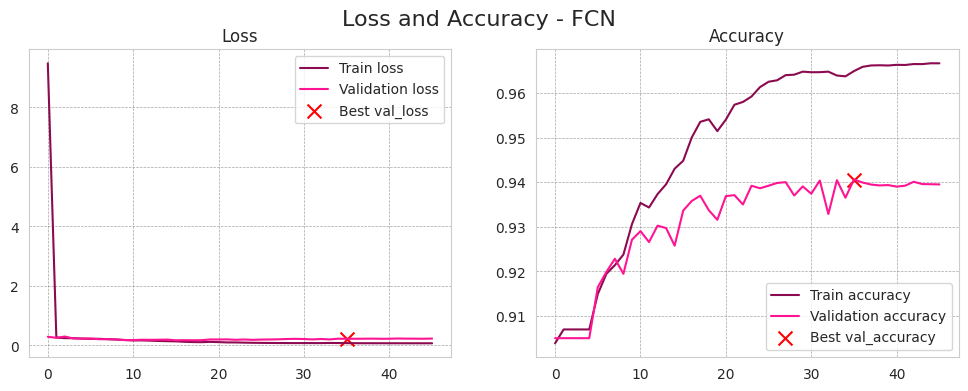
Métricas de evaluación#
y_pred=model_fcn.predict(X_test,verbose=0)
y_pred_thresholded = y_pred > 0.5
IOU_keras = MeanIoU(num_classes=2)
IOU_keras.update_state(y_pred_thresholded, y_test)
iou_score = IOU_keras.result().numpy()
prec_score = Precision()
prec_score.update_state(y_pred_thresholded, y_test)
p = prec_score.result().numpy()
recall_score = Recall()
recall_score.update_state(y_pred_thresholded, y_test)
r = recall_score.result().numpy()
auc_score = AUC()
auc_score.update_state(y_pred_thresholded, y_test)
auc = auc_score.result().numpy()
intersection = np.sum(y_pred_thresholded * y_test)
union = np.sum(y_pred_thresholded) + np.sum(y_test)
dice_coefficient = (2. * intersection) / (union + 1e-7) # Evitar división por cero
balanced_accuracy = (p + r) / 2
metrics_dict = {
"Dice Coefficient": dice_coefficient,
"Mean IoU": iou_score,
"Precision": p,
"Recall": r,
"AUC": auc,
"Balanced Accuracy": balanced_accuracy}
df_metrics_fcn = pd.DataFrame(metrics_dict, index=["Segmentación FCN"])
df_metrics_fcn.to_csv("resultados_fcn.csv")
df_metrics_fcn
| Dice Coefficient | Mean IoU | Precision | Recall | AUC | Balanced Accuracy | |
|---|---|---|---|---|---|---|
| Segmentación FCN | 0.667219 | 0.722831 | 0.602352 | 0.747659 | 0.857115 | 0.675005 |
Comparación visual#
evaluar_modelo(model_fcn, X_test, y_test, nombre_modelo="FCN")
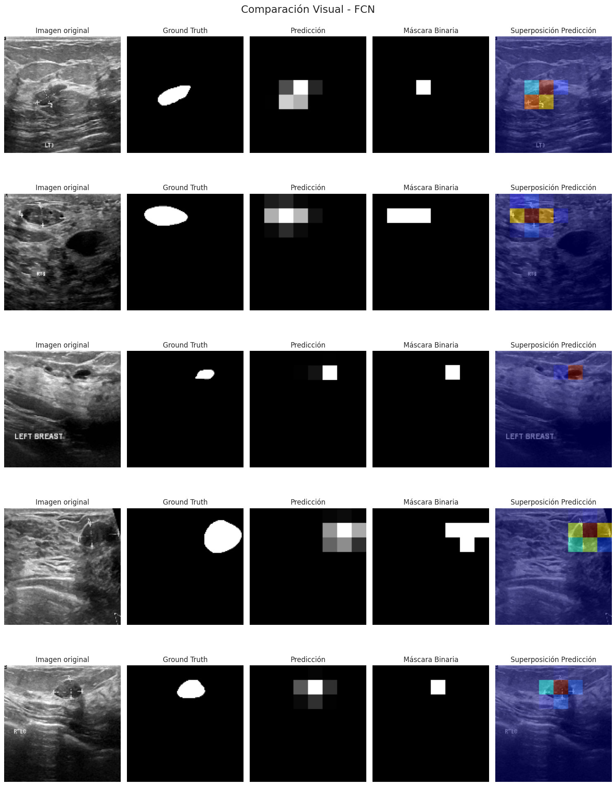
Mapas de error#
visualizar_segmentacion(model_fcn, X_test, y_test, nombre_modelo="FCN")
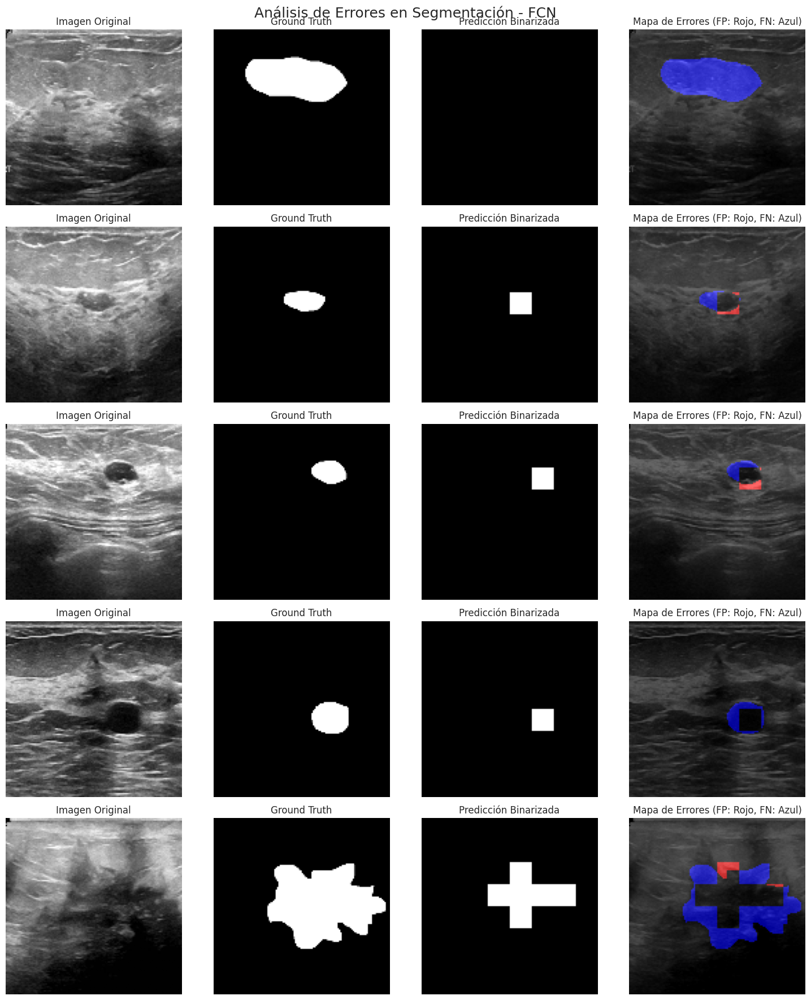
Curvas de evaluación#
plot_roc_pr_curves(y_test, y_pred)
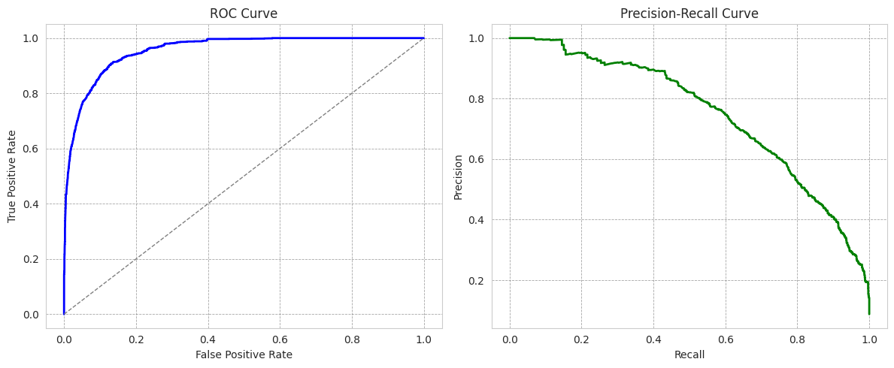
Distribución de métricas#
boxplots(y_test, y_pred)
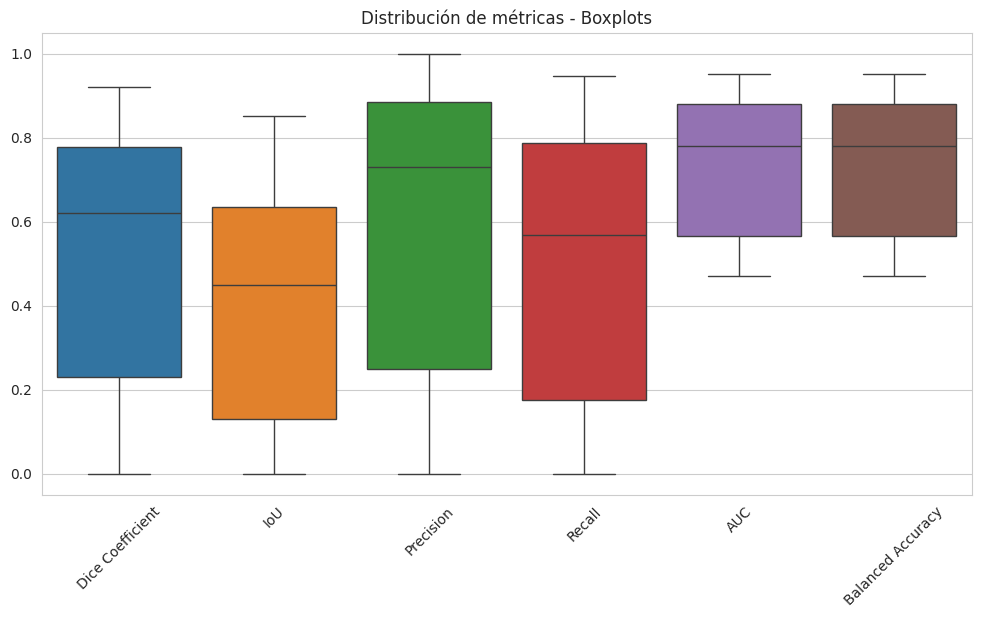
Resultados e interpretaciones generales#
Métricas de evaluación#
Resultados#
nombres_modelos = [
"UNet","VNet","SegNet","Attention UNet", "ResUNet","PSPNet","FCN"]
files = {
"UNet": r"C:\Users\kamac\Downloads\CARPETA RESULTS TABLAS\resultados_unet.csv",
"VNet": r"C:\Users\kamac\Downloads\CARPETA RESULTS TABLAS\resultados_vnet.csv",
"SegNet": r"C:\Users\kamac\Downloads\CARPETA RESULTS TABLAS\resultados_segnet.csv",
"AttUNet": r"C:\Users\kamac\Downloads\CARPETA RESULTS TABLAS\resultados_attunet.csv",
"ResUNet": r"C:\Users\kamac\Downloads\CARPETA RESULTS TABLAS\resultados_resunet.csv",
"PSPNet": r"C:\Users\kamac\Downloads\CARPETA RESULTS TABLAS\resultados_pspnet.csv",
"FCN": r"C:\Users\kamac\Downloads\CARPETA RESULTS TABLAS\resultados_fcn.csv"
}
dfs = {name: pd.read_csv(path) for name, path in files.items()}
df_concatenado = pd.concat(dfs.values(), ignore_index=True)
df_concatenado.rename(columns={df_concatenado.columns[0]: "Modelos"}, inplace=True)
df_concatenado.drop(columns=["Modelos"], inplace=True)
nombres_modelos = list(files.keys())
df_concatenado
| Dice Coefficient | Mean IoU | Precision | Recall | AUC | Balanced Accuracy | |
|---|---|---|---|---|---|---|
| UNet | 0.748199 | 0.778189 | 0.671218 | 0.845587 | 0.909610 | 0.758402 |
| VNet | 0.753009 | 0.780535 | 0.706174 | 0.806462 | 0.891673 | 0.756318 |
| SegNet | 0.658875 | 0.720244 | 0.561378 | 0.797481 | 0.879595 | 0.679429 |
| AttUNet | 0.724397 | 0.759590 | 0.683622 | 0.770648 | 0.872404 | 0.727135 |
| ResUNet | 0.727015 | 0.762711 | 0.668666 | 0.796554 | 0.884686 | 0.732610 |
| PSPNet | 0.706780 | 0.746434 | 0.684903 | 0.730197 | 0.852291 | 0.707550 |
| FCN | 0.667219 | 0.722831 | 0.602352 | 0.747659 | 0.857115 | 0.675005 |
Para la interpretación de las métricas tendremos en cuenta lo siguiente:
Intersection over Union (IoU): Mide la superposición entre la segmentación predicha y la real. Valores más altos indican una mejor segmentación.
Recall vs. Precision:
Recall más alto que precisión: El modelo detecta la mayoría de los píxeles relevantes (buen cubrimiento), pero también genera falsos positivos.
Precision más alto que recall: El modelo es más conservador y evita falsos positivos, pero puede no detectar todos los píxeles relevantes.
Dice Coefficient: Métrica similar al IoU, pero más sensible a la distribución de píxeles. Un valor alto indica una gran coincidencia entre la máscara predicha y la real.
Área Bajo la Curva (AUC): Evalúa el rendimiento del modelo en diferentes umbrales de decisión. Un AUC alto indica que el modelo segmenta bien en distintas condiciones.
Balanced Accuracy: Promedia la sensibilidad (recall) y la especificidad, útil en conjuntos de datos desbalanceados. Un valor alto indica que el modelo trata bien ambas clases (píxeles de la estructura y fondo).
Interpretación#
Los modelos VNet y UNet son los que logran la mejor segmentación en términos de superposición entre la máscara predicha y la real. VNet tiene un Dice Coefficient de 0.753 y un Mean IoU de 0.780, mientras que UNet tiene valores muy similares (0.748 y 0.778, respectivamente). Además, UNet tiene el AUC más alto (0.909), lo que indica que su rendimiento es más estable en distintos umbrales de decisión.
El modelo SegNet tiene la menor precisión (0.561), lo que indica que genera muchos falsos positivos. Sin embargo, su recall es alto (0.797), lo que significa que detecta la mayoría de los píxeles tumorales, pero con errores. En contraste, VNet y UNet logran un mejor equilibrio entre precisión y recall, lo que confirma que son más confiables para detectar tumores sin generar tantos falsos positivos.
Los modelos AttUNet, ResUNet y PSPNet tienen valores intermedios en todas las métricas. No son los mejores, pero tampoco los peores. En cambio, FCN muestra el peor desempeño con el menor Dice Coefficient (0.667) y precisión (0.602), lo que indica que no segmenta bien los tumores y tiene un bajo desempeño en la detección de píxeles relevantes.
En cuanto a la Balanced Accuracy, UNet y VNet nuevamente destacan con los valores más altos. Esto significa que estos modelos manejan bien tanto los píxeles tumorales como el fondo, sin favorecer demasiado a una clase sobre la otra. En contraste, SegNet y FCN tienen los valores más bajos, lo que indica que pueden estar sesgados y no equilibran correctamente las predicciones.
En este caso, para la segmentación de tumores en ultrasonidos de cáncer de mama en imágenes en escala de grises, los modelos más recomendados son UNet y VNet, ya que tienen el mejor equilibrio entre precisión, recall y estabilidad en distintas condiciones. Por otro lado, SegNet y FCN presentan problemas, siendo SegNet un modelo que detecta muchos píxeles relevantes pero con muchos errores, mientras que FCN tiene el peor desempeño general.